Code
library(tidyverse)
library(tidycensus)
library(sf)
library(caret)
library(spdep)
library(nngeo)
library(stats)
library(dplyr)
options(scipen = 999)MUSA 5080 · Team assignment
In class we built a house price model for Philadelphia. Now your team does it for a city you haven’t modeled: Chicago.
The Cook County Assessor’s Office has to value every home in the county, including the vast majority that didn’t sell this year. Assessments drive property tax bills. When they’re wrong in a systematic way, some households pay more than their share. A 2017 Chicago Tribune investigation, “The Tax Divide,” found exactly that in Cook County: lower-value homes were assessed at higher shares of their worth than expensive ones.
Build a model that predicts single-family sale prices in Chicago, 2023–2025, using only the tools from this course. The file contains only features of the house itself. Everything about location is yours to build.
| File | What’s in it |
|---|---|
chicago_train.csv |
About 80% of the houses, with sale prices |
chicago_test.csv |
The other 20%, without sale prices. You predict them; we score you. |
The test houses were held out by house, not by sale, so a house that sold twice is entirely on one side. Your CV RMSE is your estimate. Your test RMSE is the truth. If they’re far apart, something leaked.
Due: Friday, October 30. All teammates renders the file on their portfolio and every member submits that link on Canvas. One teammate uploads team_XX_predictions.csv.
Individual accountability: Q7 on October 30 asks each of you about this model: which features you used and why, your CV and test RMSE, and where the model fails worst. Make sure everyone can explain all of it.
You must predict every test house, so fill NAs in a feature rather than filtering.
Open data from 2023–2025 only.
Nothing built from sale prices. Would the Assessor have this number for a house that didn’t sell?
Transform predictors, not sale_price.
No features built from other houses’ sale prices.
| Model log | Every model you tried, in order, with CV RMSE and Moran’s I. Each row has a note saying why you tried it. |
| Features | Incorporate the feature engineering tricks - including the spatial ones covered these past few weeks. |
| Diagnostics | Residual maps for your baseline and final model, and what changed. |
| Error analysis | Where your final model fails worst, and whose homes it over-values (Part 4). |
| Reasoning | Choices justified by evidence from your own analysis. |
These helpers are to help you get off the ground.
library(tidyverse)
library(tidycensus)
library(sf)
library(caret)
library(spdep)
library(nngeo)
library(stats)
library(dplyr)
options(scipen = 999)check_na <- function(formula, df) {
vars <- all.vars(formula)
bad <- vars[sapply(vars, function(v) any(is.na(df[[v]])))]
if (length(bad) > 0) {
stop("These variables have NAs: ", paste(bad, collapse = ", "),
". Fill them or choose another variable (Rule 1).")
}
}
# 10-fold CV RMSE, same folds every time
cv_rmse <- function(formula, data) {
df <- if (inherits(data, "sf")) st_drop_geometry(data) else data
check_na(formula, df)
set.seed(5080)
fit <- train(formula, data = df, method = "lm",
trControl = trainControl(method = "cv", number = 10))
fit$results$RMSE
}
# Each house's prediction from the fold where it was held out
cv_pred <- function(formula, data) {
df <- if (inherits(data, "sf")) st_drop_geometry(data) else data
check_na(formula, df)
set.seed(5080)
fit <- train(formula, data = df, method = "lm",
trControl = trainControl(method = "cv", number = 10,
savePredictions = "final"))
fit$pred %>% arrange(rowIndex) %>% pull(pred)
}
# Chicago Data Portal (Socrata) -> sf. `where` is a SoQL filter.
socrata_get <- function(dataset, where, select = NULL, limit = 200000) {
where <- str_squish(where)
q <- paste0("$where=", URLencode(where, reserved = TRUE), "&$limit=", limit)
if (!is.null(select)) q <- paste0(q, "&$select=", URLencode(str_squish(select), reserved = TRUE))
url <- paste0("https://data.cityofchicago.org/resource/", dataset, ".geojson?", q)
tmp <- tempfile(fileext = ".geojson")
resp <- tryCatch(download.file(url, tmp, quiet = TRUE), error = function(e) e)
if (inherits(resp, "error")) stop("Portal request failed. Open this URL in a browser to see why:\n", url)
st_read(tmp, quiet = TRUE)
}
# helper function for calculating moran's I
# takes in all_sales and list of predictors, uses k=8 for queen weight
# example on how to call it: moran_i_cv(all_sales, predictors2)
library(sf)
library(spdep)
moran_i_cv <- function(all_sales, predictors, k = 8) {
train <- all_sales %>%
filter(split == "train")
formula <- reformulate(
termlabels = predictors,
response = "sale_price"
)
cv_predictions <- cv_pred(formula, train)
cv_residuals <- train$sale_price - cv_predictions
# Extract coordinates safely whether 'train' is an sf object or standard data frame
if (inherits(train, "sf")) {
coords <- st_coordinates(train)
} else if (all(c("lon", "lat") %in% colnames(train))) {
coords <- as.matrix(train[, c("lon", "lat")])
} else {
stop("`all_sales` must be an 'sf' object or contain 'lon' and 'lat' columns.")
}
neighbors <- knn2nb(knearneigh(coords, k = k))
weights <- nb2listw(
neighbors,
style = "W",
zero.policy = TRUE
)
result <- moran.test(
cv_residuals,
weights,
zero.policy = TRUE
)
# Return the Moran's I statistic numeric value
return(unname(result$estimate["Moran I statistic"]))
}Build every feature on all_sales, so training and test houses get identical features. Split off train again whenever you add something.
all_sales <- bind_rows(
read_csv("chicago_train.csv", show_col_types = FALSE) %>% mutate(split = "train"),
read_csv("chicago_test.csv", show_col_types = FALSE) %>% mutate(split = "test")
) %>%
st_as_sf(coords = c("lon", "lat"), crs = 4326) %>%
st_transform(3435) # Illinois East State Plane, feet
all_sales %>% st_drop_geometry() %>% count(split)# A tibble: 2 × 2
split n
<chr> <int>
1 test 5789
2 train 23200Useful sources: the Chicago Data Portal (find a dataset’s ID under its API button), the Census via tidycensus, and Cook County’s open data.
Decide which training sales are market sales. Record each rule, why, and how many it removed. Then explore: at least four plots, including a map of price.
NA columns:
library(dplyr)
train <- read_csv("chicago_train.csv")
test <- read_csv("chicago_test.csv")
colSums(is.na(train)) id lat lon sale_date
0 0 0 0
year sale_qrt sale_price is_multisale
0 0 0 0
building_000sf building_age lotsize_acre num_bedrooms
0 0 1 0
num_full_baths num_half_baths num_fireplaces garage_size
0 38 349 11
central_air one_story full_basement finished_basement
0 0 2 0
brick_stone_ext warmairfurnace
0 7 colSums(is.na(test)) id lat lon sale_date
0 0 0 0
year sale_qrt is_multisale building_000sf
0 0 0 0
building_age lotsize_acre num_bedrooms num_full_baths
0 0 0 0
num_half_baths num_fireplaces garage_size central_air
7 63 5 0
one_story full_basement finished_basement brick_stone_ext
0 0 0 0
warmairfurnace
2 There are quite a few columns with NA values. To manage this, we first
Interpolate missing lotsize_acre value in the train dataset from checking 5 nearest neighbours:
# extract NA row, interpolate w knn
missing_row <- all_sales |> filter(is.na(lotsize_acre)) #THIS IS A SPATIAL OBJECT
valid_rows <- all_sales |> filter(!is.na(lotsize_acre))
# calc to the missing row and pull the 5 closest obs
knn5 <- st_nn(missing_row, valid_rows, k = 5, returnDist = FALSE, progress = FALSE)
knn5 # THIS RETURNS INDICES FROM VALID_ROWS THAT ARE NEAREST NEIGHBORA[[1]]
[1] 5074 22453 19339 8806 20106# extrapolate index (idx) to find lotsize_acre column in original df valid_rows
lotsize_knn5 <- lapply(knn5, function(idx) {
valid_rows$lotsize_acre[idx]
})
# Access neighbor values for the 1st missing row:
lotsize_knn5[[1]][1] 0.07174013 0.07174013 0.07167126 0.07174013 0.07174013# ADD LOTSIZE NUMBER in the missing row in training dataset
neighbor_lotsize <- mean(lotsize_knn5[[1]], na.rm = TRUE)
all_sales <- all_sales |>
mutate(lotsize_acre = if_else(is.na(lotsize_acre), neighbor_lotsize, lotsize_acre))Replace NA values in garage_size, num_fireplaces, full_basement, warmairfurnace in both train and test datasets with zero:
# change NA value to zero
all_sales$garage_size[is.na(all_sales$garage_size)] <- 0
all_sales$num_fireplaces[is.na(all_sales$num_fireplaces)] <- 0
all_sales$full_basement[is.na(all_sales$full_basement)] <- 0
all_sales$warmairfurnace[is.na(all_sales$warmairfurnace)] <- 0
all_sales$num_half_baths[is.na(all_sales$num_half_baths)] <- 0Answer: What in your exploration shaped your modeling choices?
Your answer:
Each column for both the training and testing datasets was first examined for NA values. Below is a list of columns displaying NA values (and number of rows) and how it was managed:
lotsize_acre (1): Lot size for that row was approximated according to the 5 nearest neighbours
garage_size (16): Values were changed to zero because it was assumed that there is no garage in the house.
num_half_baths (45): Values were changed to zero because it was assumed that no half baths were found.
num_fireplaces (412): Values were changed to zero because it was assumed no fireplace was found.
full_basement (2): Values were changed to zero because it was assumed no basement was found.
warmairfurnace (9): Values were changed to zero because it was assumed no warm air furnace was found.
The minimum value of sale_price is $10,373, which seems plausible based on brief market research that was carried out. All rows are kept, with NA values replaced as mentioned above.
Market sales is defined as:
sale_price > $1: To exclude any informal property transfer at a nominal $1 price that is not reflective of market prices.sale_price < $10,000,000: This prediction is intended for normal houses. There were 3 properties about 10m that skewed the dataset a lot.multisale sales were kept because they are still reflective of a type of market sale. The sale price reflected is still of the individual property price (instead of the sum of the properties) so it does not inflate the data.1) Map of median house price in each census tract
class(train)[1] "spec_tbl_df" "tbl_df" "tbl" "data.frame" head(train)# A tibble: 6 × 22
id lat lon sale_date year sale_qrt sale_price is_multisale
<dbl> <dbl> <dbl> <chr> <dbl> <dbl> <dbl> <dbl>
1 1 41.8 -87.6 January 02, 2023 2023 1 510000 0
2 2 41.8 -87.7 January 02, 2023 2023 1 180000 0
3 3 41.9 -87.7 January 02, 2023 2023 1 701500 0
4 4 41.9 -87.8 January 02, 2023 2023 1 199000 0
5 5 41.7 -87.6 January 03, 2023 2023 1 56500 0
6 6 41.8 -87.6 January 03, 2023 2023 1 69500 0
# ℹ 14 more variables: building_000sf <dbl>, building_age <dbl>,
# lotsize_acre <dbl>, num_bedrooms <dbl>, num_full_baths <dbl>,
# num_half_baths <dbl>, num_fireplaces <dbl>, garage_size <dbl>,
# central_air <dbl>, one_story <dbl>, full_basement <dbl>,
# finished_basement <dbl>, brick_stone_ext <dbl>, warmairfurnace <dbl># need to change to sf object
train <- train |>
st_as_sf(coords = c("lon", "lat"), crs = 4326) %>%
st_transform(st_crs(all_sales)) # Illinois East State Plane, feet
# get census block sf object
tracts <- socrata_get(
dataset = "7qjk-677h",
where = "1=1", # Pull all census blocks
)
tracts <- tracts |>
st_transform(st_crs(all_sales))
# ggplot(blocks_sf)+
# geom_sf()
# CHOROPLETH MAP, AGGREGATED TO CENSUS BLOCKS 2020
# COUNT: total sales + median price
# st_join points to blocks. then aggregate by block id
median_price_tracts <- st_join(train, tracts, join = st_intersects) |>
st_drop_geometry() |>
group_by(tract_ce) |>
summarise(
median_price = median(sale_price, na.rm = TRUE),
total_sales = n()
)
# join back to SPATIAL tracts polygons with median sale_price and counts
# DONT filter, display NA value
median_price_tracts <- tracts |>
left_join(median_price_tracts, by = "tract_ce") #|>
#filter(!is.na(median_price))
hist(median_price_tracts$median_price)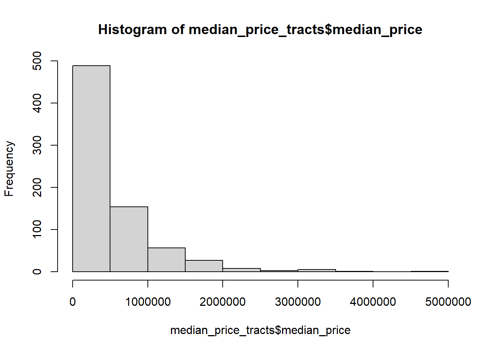
# very right skewed histogram
# the distribution of median sale price is very irregular and a jenks classification needs to be applied.
library(classInt) # Needed to calculate Jenks breaks
library(scales) # Needed for dollar formatting
# make jenks, EXCLUDE NA VALUES
prices_for_breaks <- na.omit(median_price_tracts$median_price)
jenks_breaks <- classIntervals(prices_for_breaks, n = 5, style = "jenks")$brks
legend_labels <- paste0(
dollar(jenks_breaks[-length(jenks_breaks)]),
" - ",
dollar(jenks_breaks[-1])
)
# add jenks breaks into object
median_price_tracts <- median_price_tracts |>
mutate(
price_class = cut(
median_price,
breaks = jenks_breaks,
include.lowest = TRUE,
labels = legend_labels
)
)
# extract point data for lowest and highest price (NOT MEDIAN)
extreme_points <- train %>%
filter(sale_price == min(sale_price, na.rm = TRUE) | sale_price == max(sale_price, na.rm = TRUE)) %>%
mutate(type = if_else(sale_price == min(sale_price, na.rm = TRUE), "Lowest Price", "Highest Price"))
#get background tiles
library(maptiles)
library(tidyterra)
library(terra)
library(ggspatial)
boundary <- st_union(tracts)
ggplot(median_price_tracts) +
geom_sf(aes(fill = price_class), color = NA) +
scale_fill_viridis_d(
option = "mako",
name = "Median Sale Price Tiers (Jenks)",
direction = -1,
na.value = "darkgrey" # <-- Changes NA fills from default grey/transparent to custom grey
) +
geom_sf(
data = extreme_points,
aes(color = type),
size = 2,
stroke = 0.5
) +
scale_color_manual(
name = "Extremes",
values = c("Lowest Price" = "#FF3333", "Highest Price" = "#00FF66")
) +
theme_void() +
labs(
title = "Median House Sale Prices per Census Tract"
)
A jenks classification was placed on the aggregated data of sale_price per tract because the data is very right skewed. A jenks classification would help to split the 5 classes in the choropleth map to reduce variability within each class, accounting for these outliers.
Observations: Median sale price is the highest north of the Loop (near Lakeview), ranging from $2,399,000 to $4,900,000. Median sale price generally decreases further away from the financial district and is the lowest in South Chicago. The
highest price ($21.8m)
transaction is within the financial district.
2) Histograms of each variable so far (baseline)
predictors_baseline <- c(
"year",
"sale_qrt",
"is_multisale",
"building_000sf",
"building_age",
"lotsize_acre",
"num_bedrooms",
"num_full_baths",
"num_half_baths",
"num_fireplaces",
"garage_size",
"central_air",
"one_story",
"full_basement",
"finished_basement",
"brick_stone_ext",
"warmairfurnace"
)
# ONLY USE WITH TRAINING DATASET (spatial dataframe)
train_df <- all_sales %>%
st_drop_geometry() %>%
filter(split == "train")
# check histograms - see if need log transformation
for (pred in predictors_baseline) {
p <- ggplot(train_df, aes(x = .data[[pred]])) +
geom_histogram(bins = 30, fill = "steelblue", color = "white", alpha = 0.8) +
theme_minimal() +
labs(
title = paste("Distribution of", pred),
x = pred,
y = "Count"
)
print(p)
}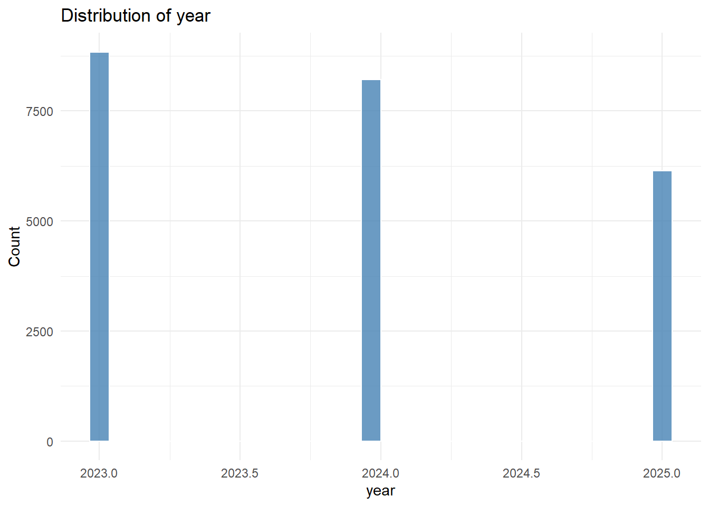


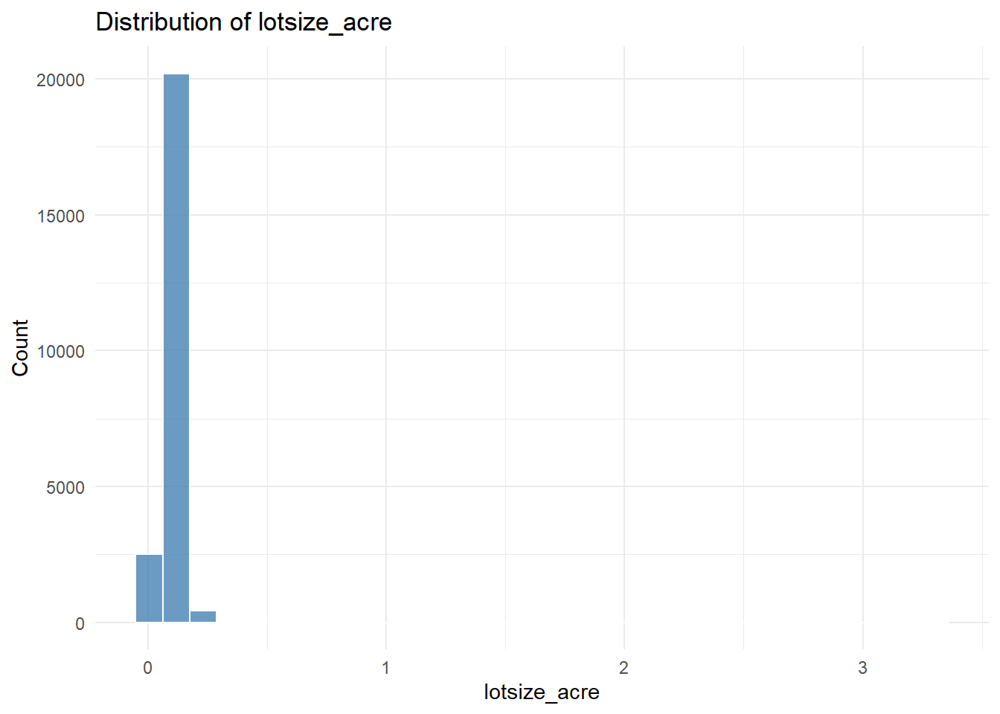
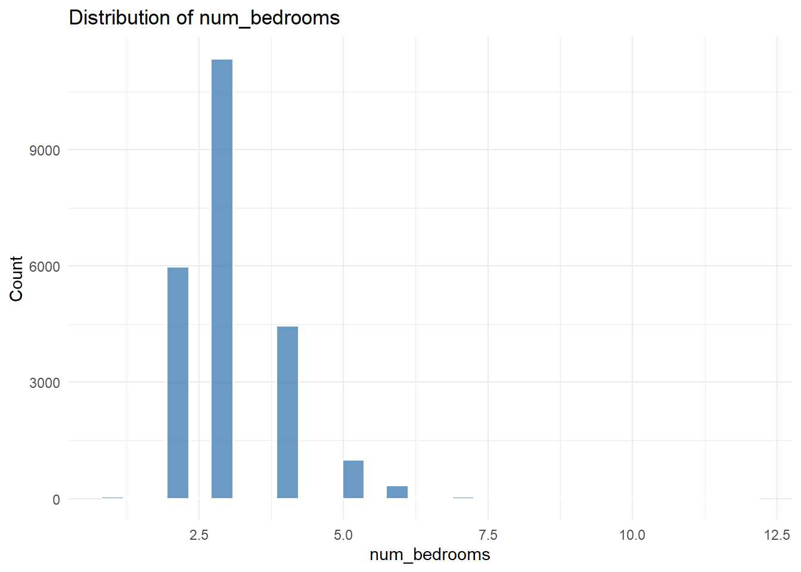

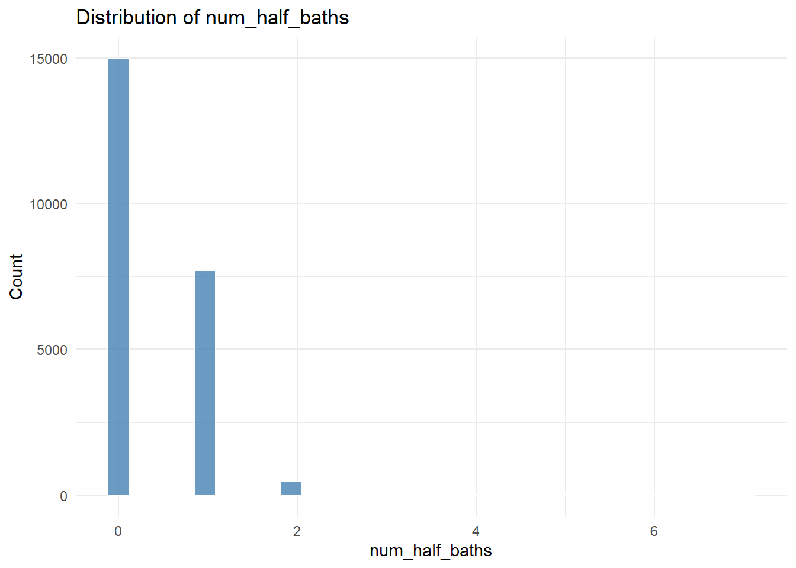


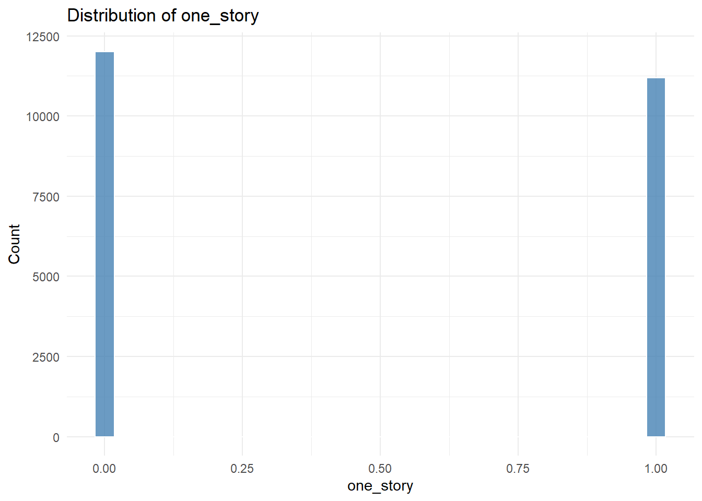

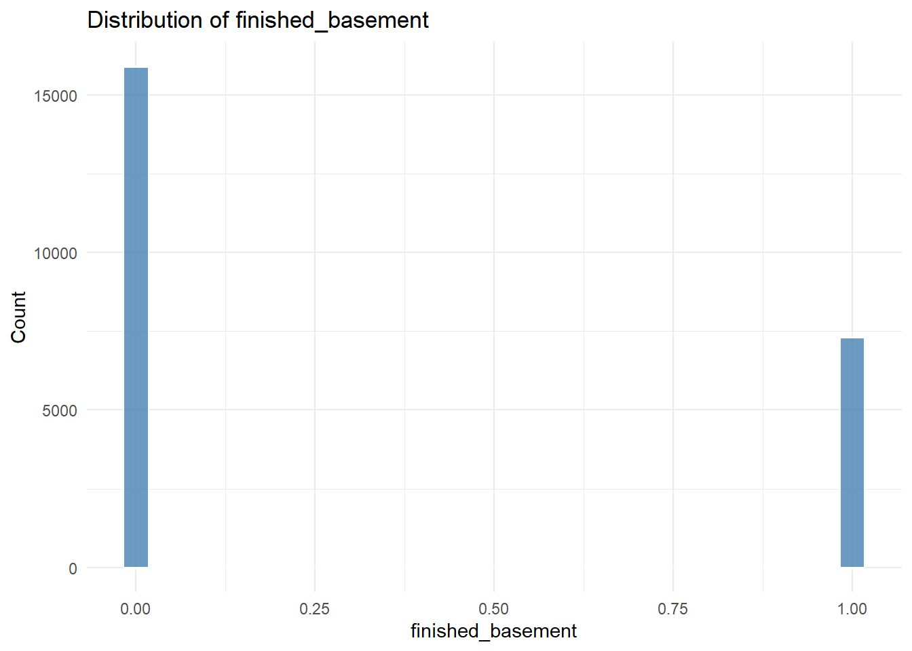


building_000sf is severely right-skewed which might benefit from a log-transformation. This will normalise the data. Most of the current variables are categorical data which will need to be managed appropriately in our baseline model.
Start with a structure-only baseline. Then add features in steps you can learn from, logging each one. Keep the log in a tibble with columns model, added, cv_rmse, moran_i, notes.
The predictors we will be adding and exploring are:
| Variable name | Explanation |
violentcrime_660ft |
Number of violent crime incidents (in 2022) within 660ft (one block) of the property. Violent crimes are considered: homicide, robbery, battery, assault, criminal sexual assault, kidnapping, human trafficking, sex offense, stalking, intimidation, and offense involving children Source: Chicago Data Portal (Crimes - 2022) Only the year 2022 was included as it has the most influence on sale prices from 2023-2025. |
propertycrime_660ft |
Number of property crime incidents (in 2022) within 660ft (one block) of the property. Property crimes are considered: burglary, motor vehicle theft, theft, arson, criminal damage, and criminal trespass |
edulevelpct |
Proportion of bachelor, master’s and PhD degrees compared to population over 2025 in percentage. Source: ACS Census 2023 |
medincomeE |
Median income of population in each tract. Source: ACS Census 2023 |
nearest_school_rating_math |
Rating, out of a 100, of nearest elementary school’s overall math scores on the Illinois Assessment of Readiness (IAR). The IAR is the state assessment and accountability measure for Illinois students enrolled in a public school district. Note that the IAR is not the best holistic measure of student performance. Chicago Public Schools recently changed their school rating system, so there is no one single number put out to quantify a school’s performance. In addition, companies like GreatSchools put their school ranking data behind a paywall. Sources: Chicago Data Portal (School Districts, School Locations - 2025) Illinois State Board of Education (School Report Cards - 2025) |
distance_to_school_ft |
Distance in feet to nearest elementary school. Source: |
construction_activity |
Number of building permits for either new construction or building permits within a 600m radius between 2023-2025. Source: Chicago Data Portal (Building Permits) |
downtown_drive_time |
Travel time matrix estimate, in minutes, for driving time between the house and Chicago City Hall (not accounting for traffic conditions). Source: LEHD Census |
|+——————————+————————————————————————————————————————————————————————————————-+
#all_sales <- st_read("all_sales.geojson")# get crime 2022 data from socrato
crime <- socrata_get(
dataset = "9hwr-2zxp",
where = "1=1", # pull all census blocks
select = "id, iucr, primary_type, description, latitude, longitude, location"
)
# unique(crime$primary_type)
#
# unique(crime$description)
#
# class(crime)
# filter to property and violent crime
property_list <- c(
"BURGLARY",
"MOTOR VEHICLE THEFT",
"THEFT",
"ARSON",
"CRIMINAL DAMAGE",
"CRIMINAL TRESPASS"
)
violent_list <- c(
"HOMICIDE",
"ROBBERY",
"BATTERY",
"ASSAULT",
"CRIMINAL SEXUAL ASSAULT",
"KIDNAPPING",
"HUMAN TRAFFICKING",
"SEX OFFENSE",
"STALKING",
"INTIMIDATION",
"OFFENSE INVOLVING CHILDREN"
)
property_crimes <- crime |>
filter(primary_type %in% property_list) |>
st_transform(st_crs(all_sales))
violent_crimes <- crime |>
filter(primary_type %in% violent_list) |>
st_transform(st_crs(all_sales))
###############
# add column to all_sales object
###############
all_sales <- all_sales |>
mutate(
violentcrime_660ft = lengths(st_intersects(st_buffer(all_sales, 660), violent_crimes)),
propertycrime_660ft = lengths(st_intersects(st_buffer(all_sales, 660), property_crimes)),
)# Java heap for r5r must be set before rJava / r5r is loaded
options(java.parameters = "-Xmx8G", tigris_use_cache = TRUE)
# r5r requires Java 21. rJava locates the JVM when it loads, so install before library(r5r)
if (Sys.which("java") == "" && Sys.getenv("JAVA_HOME") == "") {
rJavaEnv::java_quick_install(version = 21)
}
library(rJavaEnv)
library(tidyverse)
library(sf)
library(tigris)
library(r5r)
library(httr2)
library(lehdr)
# The heap is fixed when the JVM starts, so fail fast if it started with the default
rJava::.jinit()
java_runtime <- rJava::.jcall("java/lang/Runtime", "Ljava/lang/Runtime;", "getRuntime")
java_heap_gb <- rJava::.jcall(java_runtime, "J", "maxMemory") / 1024^3
if (java_heap_gb < 7) {
stop("Java heap is only ", round(java_heap_gb, 1), " GB because the JVM started before ",
"java.parameters was set. Turn off RStudio's 'Restore previously open packages' / ",
"'Restore .RData' options (Tools > Global Options > General), restart R, and rerun.")
}
permit_radius_m <- 600 # search radius for construction_activity (m)
crs_m <- 26916 # NAD83 / UTM zone 16N (m)
# all_sales is read from all_sales.geojson as an sf object (EPSG:3435) with geometry only,
# so add WGS84 lon/lat columns from the geometry for r5r and the joins below
sale_lonlat <- all_sales |>
st_transform(4326) |>
st_coordinates()
all_sales <- all_sales |>
select(-any_of(c("lon", "lat"))) |>
mutate(lon = sale_lonlat[, 1], lat = sale_lonlat[, 2])Building permits come from the City of Chicago’s open-data (SODA) endpoint for dataset ydr8-5enu. No app token is needed, but the API serves 1,000 rows per request, so pages are requested with $limit/$offset in a loop until a short page comes back. The 2023–2025 date range and the two permit types are pushed into the $where clause so only the ~22k relevant rows are downloaded instead of the full 800k+ dataset.
permits_url <- "https://data.cityofchicago.org/resource/ydr8-5enu.json"
permits_page_size <- 1000 # rows per request
permits_where <- paste(
"issue_date >= '2023-01-01T00:00:00' AND issue_date < '2026-01-01T00:00:00'",
"AND permit_type IN ('PERMIT - NEW CONSTRUCTION', 'PERMIT - RENOVATION/ALTERATION')",
"AND latitude IS NOT NULL AND longitude IS NOT NULL"
)
fetch_permits_page <- function(offset) {
resp <- request(permits_url) |>
req_url_query(
`$select` = "id,permit_type,issue_date,latitude,longitude",
`$where` = permits_where,
`$order` = "id", # a stable sort keeps page boundaries consistent between requests
`$limit` = permits_page_size,
`$offset` = offset
) |>
req_retry(max_tries = 5) |>
req_error(body = function(resp) resp_body_string(resp)) |>
req_perform()
rows <- resp_body_string(resp) |>
jsonlite::fromJSON(simplifyVector = TRUE)
if (length(rows) == 0) return(tibble())
as_tibble(rows)
}
permit_pages <- list()
offset <- 0
repeat {
page <- fetch_permits_page(offset)
permit_pages[[length(permit_pages) + 1]] <- page
message("offset ", offset, ": ", nrow(page), " rows")
if (nrow(page) < permits_page_size) break
offset <- offset + permits_page_size
}
# Same column names and types as the old Building_Permits CSV read, except that
# ISSUE_DATE is already a Date (the API returns ISO 8601 timestamps, not mm/dd/yyyy).
# The API returns every field as a string, so coordinates are converted explicitly.
permits <- bind_rows(permit_pages) |>
transmute(
ID = as.character(id),
PERMIT_TYPE = permit_type,
ISSUE_DATE = as.Date(substr(issue_date, 1, 10)),
LATITUDE = as.numeric(latitude),
LONGITUDE = as.numeric(longitude)
)
nrow(permits)[1] 21947The API query already applied these filters; this keeps the same checks as a guard.
permits_filtered <- permits |>
filter(
year(ISSUE_DATE) %in% 2023:2025,
PERMIT_TYPE %in% c("PERMIT - NEW CONSTRUCTION", "PERMIT - RENOVATION/ALTERATION"),
!is.na(LATITUDE), !is.na(LONGITUDE)
)
permits_sf <- permits_filtered |>
st_as_sf(coords = c("LONGITUDE", "LATITUDE"), crs = 4326) |>
st_transform(crs_m)
count(permits_filtered, PERMIT_TYPE, year = year(ISSUE_DATE))# A tibble: 6 × 3
PERMIT_TYPE year n
<chr> <dbl> <int>
1 PERMIT - NEW CONSTRUCTION 2023 1220
2 PERMIT - NEW CONSTRUCTION 2024 1243
3 PERMIT - NEW CONSTRUCTION 2025 1454
4 PERMIT - RENOVATION/ALTERATION 2023 6409
5 PERMIT - RENOVATION/ALTERATION 2024 6154
6 PERMIT - RENOVATION/ALTERATION 2025 5467Number of filtered permits within permit_radius_m of each sale.
train_sf <- all_sales |>
st_transform(crs_m)
all_sales$construction_activity <- lengths(
st_is_within_distance(train_sf, permits_sf, dist = permit_radius_m)
)
summary(all_sales$construction_activity) Min. 1st Qu. Median Mean 3rd Qu. Max.
0.00 15.00 26.00 40.28 49.00 405.00 The street network comes from BBBike’s Chicago OSM extract (~100 MB, refreshed weekly), which covers lon −88.01 to −87.40 and lat 41.64 to 42.09. Every sale falls inside that box, so the statewide Illinois PBF (~350 MB) isn’t needed. The download is skipped if the file is already present, and r5r caches the built network next to it, so later runs only pay the build cost when the PBF changes.
r5r_dir <- "data/r5r_chicago"
dir.create(r5r_dir, recursive = TRUE, showWarnings = FALSE)
pbf_url <- "https://download.bbbike.org/osm/bbbike/Chicago/Chicago.osm.pbf"
pbf <- file.path(r5r_dir, basename(pbf_url))
if (!file.exists(pbf)) {
request(pbf_url) |>
req_retry(max_tries = 3) |>
req_progress() |>
req_perform(path = pbf)
}
# # Fail early if any sale is outside the extract, which would leave it unroutable
# pbf_bbox <- c(xmin = -88.01, ymin = 41.64, xmax = -87.40, ymax = 42.09)
# stopifnot(
# all(between(all_sales$lon, pbf_bbox["xmin"], pbf_bbox["xmax"])),
# all(between(all_sales$lat, pbf_bbox["ymin"], pbf_bbox["ymax"]))
# )
r5r_core <- if (exists("build_network", asNamespace("r5r"))) {
build_network(r5r_dir, verbose = FALSE)
} else {
setup_r5(r5r_dir, verbose = FALSE)
}Driving-time isochrones from downtown Chicago (41.883249, -87.630944) at the cutoffs in isochrone_cutoffs. Note that r5r car routing uses free-flow speeds, so congestion isn’t modelled.
Car travel time from downtown to each sale’s own coordinates, routed with travel_time_matrix(). This replaces looking each sale up in the isochrones: the isochrones are drawn from a coarse grid and have holes wherever a grid point can’t be reached by car, which left 19 sales with NA. Routing each sale snaps it to the nearest drivable road instead.
downtown <- data.frame(id = "downtown", lat = 41.883249, lon = -87.630944)
# Many sales share coordinates, so route each unique location once.
# r5r needs an `id` column, which is renamed so it doesn't clash with all_sales$id
sale_pts <- all_sales |>
st_drop_geometry() |>
distinct(lon, lat) |>
mutate(pt_id = as.character(row_number()))
downtown_tt <- travel_time_matrix(
r5r_core,
origins = downtown,
destinations = rename(sale_pts, id = pt_id),
mode = "CAR",
departure_datetime = as.POSIXct("2023-10-04 08:00:00"),
max_trip_duration = 90,
progress = FALSE
)
all_sales <- all_sales |>
select(-any_of("downtown_drive_time")) |>
left_join(sale_pts, by = c("lon", "lat")) |>
left_join(select(downtown_tt, pt_id = to_id, downtown_drive_time = travel_time_p50), by = "pt_id") |>
select(-pt_id)
summary(all_sales$downtown_drive_time) Min. 1st Qu. Median Mean 3rd Qu. Max.
5.00 17.00 20.00 19.86 23.00 33.00 Straight-line (Euclidean) distance in meters between the centroids of each OD pair’s home block (h_geocode) and work block (w_geocode).
# LODES8 2023 Illinois OD, all jobs (JT00), all workers (S000). "main" keeps pairs where
# both home and work are in Illinois; lehdr caches the ~30 MB download.
lodes_args <- list(
state = "il", year = 2023, version = "LODES8",
lodes_type = "od", job_type = "JT00", segment = "S000",
agg_geo = "block", state_part = "main", use_cache = TRUE
)
od_raw <- tryCatch(
do.call(grab_lodes, lodes_args),
error = function(e) {
if (!grepl("outside the valid range", conditionMessage(e))) stop(e)
# lehdr 1.2.0 hard-codes LODES8 years as 2002-2022 even though the 2023 release exists.
# Reproduce what grab_lodes() does for that file: same URL, cache path and column types.
message("lehdr rejected year 2023; downloading the LODES8 file directly instead")
lodes_url <- "https://lehd.ces.census.gov/data/lodes/LODES8/il/od/il_od_main_JT00_2023.csv.gz"
lodes_cache <- tools::R_user_dir("lehdr", which = "cache")
dir.create(lodes_cache, recursive = TRUE, showWarnings = FALSE)
lodes_file <- file.path(lodes_cache, paste0("lodes8_", basename(lodes_url)))
if (!file.exists(lodes_file)) {
request(lodes_url) |> req_retry(max_tries = 3) |> req_perform(path = lodes_file)
}
read_csv(lodes_file, col_types = cols(w_geocode = "c", h_geocode = "c", createdate = "c")) |>
mutate(year = 2023L, state = "IL")
}
)
# Keep only pairs with both blocks in Cook County (FIPS 17031), matching the old CSV.
od <- od_raw |>
# Geocodes stay character so the 15-digit block GEOIDs keep full precision
mutate(across(c(w_geocode, h_geocode), as.character)) |>
filter(str_starts(h_geocode, "17031"), str_starts(w_geocode, "17031")) |>
select(w_geocode, h_geocode, year, S000) |>
mutate(S000 = as.integer(S000))
# LODES 2023 uses 2020 census blocks; OD workplaces fall in Cook and DuPage
blocks <- blocks(state = "IL", county = c("Cook", "DuPage"), year = 2020) |>
select(GEOID20) |>
st_transform(crs_m)
# Point-on-surface guarantees the point falls inside irregularly shaped blocks
block_xy <- blocks |>
st_point_on_surface() |>
mutate(x = st_coordinates(geometry)[, 1],
y = st_coordinates(geometry)[, 2]) |>
st_drop_geometry()
od <- od |>
select(-any_of("distance")) |>
left_join(rename(block_xy, w_x = x, w_y = y), by = c("w_geocode" = "GEOID20")) |>
left_join(rename(block_xy, h_x = x, h_y = y), by = c("h_geocode" = "GEOID20")) |>
mutate(distance = sqrt((w_x - h_x)^2 + (w_y - h_y)^2)) |>
select(-w_x, -w_y, -h_x, -h_y)
summary(od$distance) Min. 1st Qu. Median Mean 3rd Qu. Max.
0 6002 11835 14554 19802 89198 The average distance to work of the residents of each home block. The mean is weighted by S000 (the number of workers in each OD row), so it is the average per worker. Use mean() instead if you want an unweighted average across OD rows.
home_distance <- od |>
group_by(h_geocode) |>
summarise(
average_distance_to_work = weighted.mean(distance, S000, na.rm = TRUE),
n_workers = sum(S000),
.groups = "drop"
)
summary(home_distance$average_distance_to_work) Min. 1st Qu. Median Mean 3rd Qu. Max.
66.37 11346.81 14068.24 15335.90 18108.43 73432.52 # Block-group fallback for small blocks with no LODES residents (GEOID's first 12 digits)
home_bg_distance <- od |>
mutate(h_bg = substr(h_geocode, 1, 12)) |>
group_by(h_bg) |>
summarise(
bg_average_distance_to_work = weighted.mean(distance, S000, na.rm = TRUE),
.groups = "drop"
)Each sale is assigned to the census block it falls in and matched to that block’s resident average. Sales in small blocks with no LODES-recorded residents fall back to their block group’s average instead.
train_sf <- all_sales |>
st_transform(crs_m)
train_blocks <- train_sf |>
st_join(blocks, join = st_within) |>
st_drop_geometry() |>
select(id, GEOID20)
all_sales <- all_sales |>
select(-any_of("average_distance_to_work")) |>
left_join(train_blocks, by = "id") |>
left_join(select(home_distance, h_geocode, average_distance_to_work),
by = c("GEOID20" = "h_geocode")) |>
mutate(h_bg = substr(GEOID20, 1, 12)) |>
left_join(home_bg_distance, by = "h_bg") |>
mutate(average_distance_to_work = coalesce(average_distance_to_work, bg_average_distance_to_work)) |>
select(-GEOID20, -h_bg, -bg_average_distance_to_work)
summary(all_sales$average_distance_to_work) Min. 1st Qu. Median Mean 3rd Qu. Max.
358.7 10964.2 13532.7 13975.8 16596.6 41179.0 mean(is.na(all_sales$average_distance_to_work))[1] 0cook_tracts <- get_acs(
geography = "tract",
state = "IL",
county = "Cook",
variables = c(
total_pop = "B01003_001",
medincome = "B19013_001",
ba = "B15003_022",
ma = "B15003_023",
prof = "B15003_024",
phd = "B15003_025",
popover25 = "B15003_001",
vacant = "B25002_003",
owner_occ = "B25003_002",
tenure_tot = "B25003_001"
),
year = 2023,
output = "wide",
geometry = TRUE
) %>%
st_transform(3435)chicago <- get_acs(geography = "place", state = "IL",
variables = "B01003_001", year = 2023,
geometry = TRUE) %>%
filter(NAME == "Chicago city, Illinois") %>%
st_transform(3435)
nrow(chicago)[1] 1in_chicago <- st_intersects(st_point_on_surface(cook_tracts), chicago, sparse = FALSE)[, 1]
chi_tracts <- cook_tracts %>% filter(in_chicago)#education
chi_tracts = chi_tracts %>%
mutate(
edulevel = baE + maE + profE + phdE,
edulevel_moe = sqrt(baM^2 + maM^2 + profM^2 + phdM^2),
edulevelpct = edulevel / popover25E * 100,
edulevelpct_moe = moe_prop(edulevel, popover25E, edulevel_moe, popover25M) * 100,
edu_cv = (edulevelpct_moe / 1.645) / edulevelpct * 100
)
#income
chi_tracts = chi_tracts %>%
mutate(
medinc_cv = (medincomeM / 1.645) / medincomeE * 100
)
#vacancies
chi_tracts = chi_tracts %>%
mutate(
vacant_cv = (vacantM / 1.645) / vacantE * 100
)
#owner occupied
chi_tracts = chi_tracts %>%
mutate(
owner_cv = (owner_occM / 1.645) / owner_occE * 100
)
#how long people have lived there
chi_tracts = chi_tracts %>%
mutate(
tenure_cv = (tenure_totM / 1.645) / tenure_totE * 100
)all_sales = all_sales %>%
st_transform(st_crs(chi_tracts)) %>%
st_join(chi_tracts %>% select(edulevelpct, medincomeE, tenure_totE, owner_occE, vacantE), join = st_nearest_feature)##################################
### DISTRICT DATA
##################################
# #includes polygons shape data
# cps_report_card <- read_csv("Chicago_Public_Schools_-_School_Progress_Reports_SY2425_20261024.csv")
# cps_elementary_geo <- read_csv("Chicago_Public_Schools_-_Elementary_Geographic_Networks_20261024.csv")
# https://data.cityofchicago.org/api/v3/views/twrw-chuq/query.json
cps_report_card <- socrata_get(
dataset = "twrw-chuq",
where = "1=1"
)
# https://data.cityofchicago.org/api/v3/views/pnta-kuqa/query.json
cps_elementary_geo <- socrata_get(
dataset = "pnta-kuqa",
where = "1=1"
)
##################################
### SCHOOL DATA
##################################
# filter for only elementary schools
# 2 NA values for school type for schools: Dr. Fisher Early Learning Center, Catalpa Early Childhood Center
# upon further research, both can be categorized as neighborhood schools
# this gives us the school lat lon, it does not give usable metric on school performance
cps_elementary_report_card_cleaned <- cps_report_card %>%
filter(primary_category == "ES") %>%
mutate(school_type = replace_na(school_type, "Neighborhood"))
names(cps_elementary_report_card_cleaned) [1] "one_year_dropout_rate_year" "school_survey_collaborative"
[3] "growth_psat_math_grade_10" "graduation_5_year_school_1"
[5] "other_metrics_year_1" "nwea_math_growth_grade_7"
[7] "culture_climate_rating" "student_attendance_year_1"
[9] "nwea_math_growth_grade_4_1" "website"
[11] "city" "misconducts_to_suspensions_2"
[13] "one_year_dropout_rate_avg" "graduation_4_year_school_1"
[15] "student_growth_rating" "nwea_reading_attainment_grade_3"
[17] "nwea_math_attainment_grade_11" "graduation_5_year_cps_pct"
[19] "growth_reading_grades_tested" "school_survey_rating"
[21] "nwea_math_growth_grade_7_1" "school_survey_parent_response_1"
[23] "other_metrics_year_2" "growth_psat_reading_grade"
[25] "suspensions_per_100_students_1" "nwea_reading_growth_grade_8"
[27] "graduation_4_year_cps_pct_1" "zip"
[29] "culture_climate_description" "school_type"
[31] "college_enrollment_cps_pct_1" "empty_progress_report_message"
[33] "nwea_reading_attainment_grade_7" "state"
[35] "nwea_reading_attainment_grade_10" "teacher_attendance_avg_pct"
[37] "long_name" "graduation_4_year_school"
[39] "school_longitude" "student_attainment_rating"
[41] "nwea_reading_attainment_grade_9" "nwea_math_attainment_grade_6"
[43] "school_survey_parent_teacher" "supportive_school_award_desc"
[45] "freshmen_on_track_cps_pct" "school_survey_involved"
[47] "college_enrollment_cps_pct" "nwea_math_attainment_grade_1"
[49] "nwea_math_attainment_grade_8" "average_length_suspension_1"
[51] "nwea_reading_growth_grade" "growth_psat_grade_9_school"
[53] "nwea_math_attainment_grade_10" "nwea_math_growth_grade_4"
[55] "misconducts_to_suspensions" "school_id"
[57] "blue_ribbon_award_year" "nwea_reading_growth_grade_3"
[59] "college_persistence_cps_pct_1" "nwea_reading_growth_grade_5"
[61] "graduation_5_year_cps_pct_1" "college_enrollment_school_1"
[63] "spot_light_award_year" "college_persistence_school_1"
[65] "growth_reading_grades_tested_1" "growth_math_grades_tested_1"
[67] "attainment_all_grades_school" "growth_sat_math_grade_11_1"
[69] "growth_psat_reading_grade_1" "school_survey_ambitious"
[71] "teacher_attendance_year_2" "progress_report_year"
[73] "teacher_attendance_year_1" "nwea_math_attainment_grade_2"
[75] "nwea_reading_attainment_grade_8" "school_survey_student_response_1"
[77] "attainment_psat_grade_9_school" "nwea_reading_growth_grade_11"
[79] "nwea_reading_growth_grade_6" "suspensions_per_100_students_2"
[81] "graduation_5_year_school" "chronic_truancy_pct"
[83] "attainment_reading_lbl_es" "freshmen_on_track_cps_pct_1"
[85] "nwea_reading_attainment_grade_4" "attainment_reading_pct_es"
[87] "attainment_math_lbl_es" "creative_school_certification"
[89] "nwea_reading_attainment_grade_11" "sat_grade_11_score_school"
[91] "school_latitude" "school_survey_safety"
[93] "attainment_psat_grade_10" "nwea_math_growth_grade_8"
[95] "nwea_reading_growth_grade_9" "nwea_math_growth_grade_5"
[97] "nwea_reading_attainment_grade_13" "sat_grade_11_score_cps_avg"
[99] "growth_sat_reading_grade_1" "nwea_reading_attainment_grade_5"
[101] "progress_toward_graduation_1" "nwea_math_attainment_grade_7"
[103] "average_length_suspension" "nwea_math_growth_grade_6_1"
[105] "healthy_school_certification_1" "growth_psat_math_grade_10_1"
[107] "school_survey_effective" "psat_grade_10_score_school"
[109] "growth_sat_grade_11_school_1" "nwea_reading_growth_grade_10"
[111] "nwea_math_growth_grade_5_1" "school_survey_student_response"
[113] "nwea_reading_growth_grade_2" "fax"
[115] "nwea_reading_attainment_grade_1" "average_length_suspension_2"
[117] "nwea_math_growth_grade_3_1" "school_survey_supportive"
[119] "psat_grade_9_score_school" "nwea_math_attainment_grade_9"
[121] "cps_school_profile" "graduation_4_year_cps_pct"
[123] "nwea_reading_attainment_grade_12" "nwea_math_growth_grade_6"
[125] "college_persistence_school" "improvement_award_year"
[127] "attainment_psat_grade_10_1" "growth_sat_math_grade_11"
[129] "short_name" "primary_category"
[131] "mobility_rate_pct" "nwea_math_attainment_grade_3"
[133] "school_survey_teacher_response_1" "college_enrollment_school"
[135] "suspensions_per_100_students" "address"
[137] "attainment_sat_grade_11_school" "student_attainment_description"
[139] "one_year_dropout_rate_year_1" "growth_sat_reading_grade"
[141] "school_survey_quality_of" "nwea_reading_growth_grade_1"
[143] "student_attendance_year_2" "nwea_math_attainment_grade"
[145] "college_persistence_cps_pct" "nwea_math_attainment_grade_4"
[147] "attainment_math_pct_es" "misconducts_to_suspensions_1"
[149] "parent_survey_results_year" "nwea_reading_attainment_grade"
[151] "nwea_math_attainment_grade_12" "student_growth_description"
[153] "growth_sat_grade_11_school" "nwea_reading_growth_grade_7"
[155] "freshmen_on_track_school" "attainment_all_grades_school_1"
[157] "nwea_reading_attainment_grade_2" "attainment_sat_grade_11_school_1"
[159] "student_attendance_avg_pct" "school_survey_teacher_response"
[161] "growth_math_grades_tested" "state_school_report_card"
[163] "growth_psat_grade_9_school_1" "behavior_discipline_year_1"
[165] "nwea_reading_attainment_grade_6" "attainment_psat_grade_9_school_1"
[167] "excelerate_award_gold_year" "nwea_math_attainment_grade_5"
[169] "school_survey_school_community" "nwea_math_growth_grade_8_1"
[171] "excellence_award_year" "creative_school_certification_1"
[173] "nwea_reading_growth_grade_4" "freshmen_on_track_school_1"
[175] "nwea_math_attainment_grade_13" "healthy_school_certification"
[177] "phone" "nwea_math_growth_grade_3"
[179] "school_survey_parent_response" "supportive_school_award"
[181] "progress_toward_graduation" "behavior_discipline_year"
[183] "geometry" #originally school growth
school_locations <- cps_elementary_report_card_cleaned %>%
select(
school_id,
short_name,
long_name,
school_type,
primary_category,
address,
city,
state,
zip,
phone,
school_latitude,
school_longitude,
)
##################################
### SCHOOL RATING METRICS
##################################
# designations data didn't work out, didn't have full rating info
# trying to get information from Illinois Board of Education
# issues with exporting as csv and getting comprehensive metric to compare school
# converted to csv from Illinois Board of Education Annual Report 2025
school_designations_with_school_ids <- read_csv("school_designations_with_school_ids.csv")
# school_designations_with_school_ids <- school_designations_with_school_ids %>%
# rename("school_id" = "School ID")
school_designations_with_school_ids <- school_designations_with_school_ids %>%
rename(school_id = `School ID`) %>%
mutate(school_id = as.character(school_id))
# was trying to compare schools not just by test scores, but since Chicago overhauled its school rating system in favor of holistic metrics (no dataset)
# and ratings like greatschools.com are locked behind paywall, we'll be comparing IAR (Illinois Assessment of Readiness) metrics
IARProficiency_SY2025 <- read_csv('IARProficiency_SY2025_Present.xlsx - Data.csv')
# drop first row no data
IARProficiency_SY2025 <- IARProficiency_SY2025[-1,]
# set the column names to be the values from the first row
colnames(IARProficiency_SY2025) <- IARProficiency_SY2025[1, ]
# remove header row now that we've set it to header
IARProficiency_SY2025 <- IARProficiency_SY2025[-1, ]
# checking for duplicates
any(duplicated(names(IARProficiency_SY2025))) # returns TRUE if you have duplicates[1] TRUEnames(IARProficiency_SY2025)[duplicated(names(IARProficiency_SY2025))] # shows the exact duplicate names[1] "NA" "NA" "NA" "NA" "NA"# rename cols
colnames(IARProficiency_SY2025)[c(2, 4, 7, 8, 9, 10, 11, 12)] <- c("School_ID", "Test_Name", "% At or Above Proficient", "% Above Proficient", "% Proficient", "% Approaching Proficient", "% Below Proficient", "# Tested")
# filter and get rid of notes col
IARProficiency_SY2025 <- IARProficiency_SY2025 %>%
filter(Category == "ALL") %>%
rename('school_id' = 'School_ID') %>%
select(-Notes)
# drop district total
IARProficiency_SY2025 <- IARProficiency_SY2025[-1, ]
IARProficiency_SY2025 <- IARProficiency_SY2025[-1, ]
# just math
IARProficiency_SY2025_math <- IARProficiency_SY2025 %>%
filter(Test_Name == "IAR MATH")
# change data type of School_ID to match so we can join
cps_elementary_report_card_cleaned$school_id <- as.character(cps_elementary_report_card_cleaned$school_id)
# # create separate datatsets for MATH IAR and ELA IAR
# IAR_math <- IARProficiency_SY2025 %>%
# filter(Test_Name == "IAR MATH")
#
# IAR_ela <- IARProficiency_SY2025 %>%
# filter(Test_Name == "IAR ELA")
# add in school location info
cps_elementary_IAR_math <- IARProficiency_SY2025_math %>%
left_join(
cps_elementary_report_card_cleaned %>%
select(
'school_id',
'short_name',
'long_name',
'school_type',
'primary_category',
'school_latitude',
'school_longitude'
),
by = "school_id"
)
# NA values belong to non-elementary schools, drop
cps_elementary_IAR_math <- drop_na(cps_elementary_IAR_math, primary_category)# sf the files
# note always place Longitude (X) BEFORE Latitude (Y) in the coords vector
schools_sf_geo <- st_as_sf(
cps_elementary_IAR_math,
coords = c("school_longitude", "school_latitude"),
crs = 4326
)
schools_sf <- st_transform(schools_sf_geo, crs = 3435)
cps_elementary_IAR_math_geo <- st_as_sf(
cps_elementary_IAR_math ,
coords = c("school_longitude", "school_latitude"),
crs = 4326
)
houses_sf_geo <- st_as_sf(
all_sales,
coords = c("lon", "lat"),
crs = 4326
)
houses_sf <- st_transform(houses_sf_geo, crs = 3435)
# Find the index of the nearest school for each house
nearest_idx <- st_nearest_feature(houses_sf, schools_sf)
##################################
### DISTANCE TO CITY HALL
##################################
city_hall <- st_as_sf(
data.frame(lon = -87.6324, lat = 41.8839),
coords = c("lon", "lat"),
crs = 4326
)
city_hall <- st_transform(city_hall, crs = 3435)
distances <- st_distance(houses_sf, city_hall)
# feet
distance_to_city_hall_ft <- as.numeric(
units::set_units(distances[, 1], "ft")
)
all_sales <- all_sales %>%
mutate(nearest_school_rating_math = cps_elementary_IAR_math$'% At or Above Proficient'[nearest_idx],
distance_to_school_ft = as.numeric(st_distance(houses_sf, schools_sf[nearest_idx, ], by_element = TRUE)),
distance_to_city_hall_ft = as.numeric(
units::set_units(distances[, 1], "ft")
))
#all_sales <- all_sales |> # open file and extract training dataset
#all_sales <- st_read("all_sales_complete.geojson")
# training dataset (PURE dataframe)
train_df <- all_sales %>%
st_drop_geometry() %>%
filter(split == "train")
# Make model log tibble
model_log <- tibble(
model = character(),
added = character(),
cv_rmse = numeric(),
moran = numeric(),
notes = character()
)Filter training dataset to match rules in Part 5.
train_df <- train_df %>%
mutate(avgpricepsf = sale_price / (building_000sf * 1000))
train_df <- train_df %>%
filter(avgpricepsf < 1855, sale_price >= 20000, sale_price <= 10000000)
# train_df <- train_df %>%
# mutate(across(c(year, sale_qrt, num_bedrooms, num_half_baths, num_fireplaces), as.factor))
nrow(train_df)[1] 23131str(train_df)tibble [23,131 × 37] (S3: tbl_df/tbl/data.frame)
$ id : num [1:23131] 1 2 3 4 5 6 7 8 9 12 ...
$ sale_date : chr [1:23131] "January 02, 2023" "January 02, 2023" "January 02, 2023" "January 02, 2023" ...
$ year : num [1:23131] 2023 2023 2023 2023 2023 ...
$ sale_qrt : num [1:23131] 1 1 1 1 1 1 1 1 1 1 ...
$ sale_price : num [1:23131] 510000 180000 701500 199000 56500 ...
$ is_multisale : num [1:23131] 0 0 0 0 0 0 0 0 0 0 ...
$ building_000sf : num [1:23131] 3.06 0.968 1.547 1.171 1.26 ...
$ building_age : num [1:23131] 132 81 131 102 60 140 74 115 52 77 ...
$ lotsize_acre : num [1:23131] 0.0517 0.0868 0.0717 0.0882 0.0285 ...
$ num_bedrooms : num [1:23131] 6 2 3 3 3 3 3 3 3 3 ...
$ num_full_baths : num [1:23131] 3 1 1 1 1 1 1 2 1 1 ...
$ num_half_baths : num [1:23131] 1 0 0 0 1 0 0 0 1 0 ...
$ num_fireplaces : num [1:23131] 0 0 0 0 0 0 1 0 0 0 ...
$ garage_size : num [1:23131] 0 1 0 0 0 2 1 2 2 1 ...
$ central_air : num [1:23131] 1 0 0 0 1 0 1 0 1 0 ...
$ one_story : num [1:23131] 0 0 0 1 0 0 1 0 1 0 ...
$ full_basement : num [1:23131] 1 0 1 1 1 1 1 1 1 1 ...
$ finished_basement : num [1:23131] 0 0 0 1 0 1 0 1 0 1 ...
$ brick_stone_ext : num [1:23131] 1 0 0 1 1 0 1 0 1 1 ...
$ warmairfurnace : num [1:23131] 1 1 1 1 1 0 0 1 1 0 ...
$ split : chr [1:23131] "train" "train" "train" "train" ...
$ violentcrime_660ft : int [1:23131] 18 5 11 34 49 21 0 8 0 5 ...
$ propertycrime_660ft : int [1:23131] 45 15 24 48 47 36 7 14 5 14 ...
$ lon : num [1:23131] -87.6 -87.7 -87.7 -87.8 -87.6 ...
$ lat : num [1:23131] 41.8 41.8 41.9 41.9 41.7 ...
$ construction_activity : int [1:23131] 96 10 107 48 36 33 16 55 20 26 ...
$ downtown_drive_time : int [1:23131] 15 16 14 20 20 21 19 16 21 20 ...
$ average_distance_to_work : num [1:23131] 7256 12960 6242 10607 17237 ...
$ edulevelpct : num [1:23131] 52.63 17.35 65.9 9.14 14.83 ...
$ medincomeE : num [1:23131] 71359 56190 94688 50924 23750 ...
$ tenure_totE : num [1:23131] 1391 1502 754 2159 708 ...
$ owner_occE : num [1:23131] 428 731 312 549 188 ...
$ vacantE : num [1:23131] 245 89 70 317 142 422 73 100 15 189 ...
$ nearest_school_rating_math: num [1:23131] 7.1 35.5 13.7 7.2 2.8 6.6 64.8 21.1 60.2 43.5 ...
$ distance_to_school_ft : num [1:23131] 2025 1518 1607 1731 2187 ...
$ distance_to_city_hall_ft : num [1:23131] 28355 32815 23119 36221 54915 ...
$ avgpricepsf : num [1:23131] 166.7 186 453.5 169.9 44.8 ...The baseline model (from the original training dataset) will first be built:
predictors_baseline <- c(
"year",
"sale_qrt",
"is_multisale",
"building_000sf",
"building_age",
"lotsize_acre",
"num_bedrooms",
"num_full_baths",
"num_half_baths",
"num_fireplaces",
"garage_size",
"central_air",
"one_story",
"full_basement",
"finished_basement",
"brick_stone_ext",
"warmairfurnace"
)
#build baseline model
f1 <- reformulate(termlabels = predictors_baseline, response = "sale_price")
m1 <- lm(f1, data = train_df)
summary(m1)
Call:
lm(formula = f1, data = train_df)
Residuals:
Min 1Q Median 3Q Max
-2263635 -138160 -4218 119111 4309210
Coefficients:
Estimate Std. Error t value Pr(>|t|)
(Intercept) -44681704.92 4966158.61 -8.997 < 0.0000000000000002 ***
year 21890.80 2453.92 8.921 < 0.0000000000000002 ***
sale_qrt 7566.72 1908.66 3.964 0.00007380036507416 ***
is_multisale 28394.44 8784.12 3.232 0.00123 **
building_000sf 472182.88 5346.49 88.317 < 0.0000000000000002 ***
building_age -337.15 71.65 -4.706 0.00000254418533606 ***
lotsize_acre -730656.11 50602.54 -14.439 < 0.0000000000000002 ***
num_bedrooms -65405.71 3139.11 -20.836 < 0.0000000000000002 ***
num_full_baths 134956.13 4273.00 31.583 < 0.0000000000000002 ***
num_half_baths 45438.06 4405.60 10.314 < 0.0000000000000002 ***
num_fireplaces 106337.00 4387.31 24.237 < 0.0000000000000002 ***
garage_size 14582.98 2498.17 5.837 0.00000000537065033 ***
central_air 31841.28 5072.06 6.278 0.00000000034955892 ***
one_story 132734.32 4822.97 27.521 < 0.0000000000000002 ***
full_basement 37477.47 4839.22 7.745 0.00000000000000999 ***
finished_basement 40475.84 4691.27 8.628 < 0.0000000000000002 ***
brick_stone_ext -20956.73 4299.55 -4.874 0.00000109992829371 ***
warmairfurnace 45746.93 5757.31 7.946 0.00000000000000202 ***
---
Signif. codes: 0 '***' 0.001 '**' 0.01 '*' 0.05 '.' 0.1 ' ' 1
Residual standard error: 295600 on 23113 degrees of freedom
Multiple R-squared: 0.6635, Adjusted R-squared: 0.6633
F-statistic: 2681 on 17 and 23113 DF, p-value: < 0.00000000000000022model_log <- model_log %>%
add_row(model = "m1", added = "Baseline",
cv_rmse = cv_rmse(f1, train_df),
moran = moran_i_cv(train_df, predictors_baseline),
notes = "Original, untransformed variables")
#model_log <- model_log[-1, ] # to remove row
model_log# A tibble: 1 × 5
model added cv_rmse moran notes
<chr> <chr> <dbl> <dbl> <chr>
1 m1 Baseline 297569. 0.383 Original, untransformed variablesThe baseline model has an adjusted R-squared of 0.66 meaning that it can explain 66% of variance in the training dataset, which is pretty good. The CV RMSE is $297k, meaning that the model is $297k off from actual (unseen) data.
Let’s first check the scatterplots for all the variables to evaluate which might need transformations.
The histograms were in Part 1c, to check if log transformations were needed.
library(rlang)
for (pred in predictors_baseline) {
p <- ggplot(train_df, aes(x = !!parse_expr(pred), y = sale_price)) +
geom_point(alpha = 0.4, color = "darkblue") +
geom_smooth(#method = "lm", formula = y ~ x , #REMOVE LM TO PLOT SMOOTHING LINE INSTEAD
color = "red",
se = FALSE) +
theme_minimal() +
labs(
title = paste("Sale Price vs", pred),
x = pred,
y = "Sale Price"
)
print(p)
}

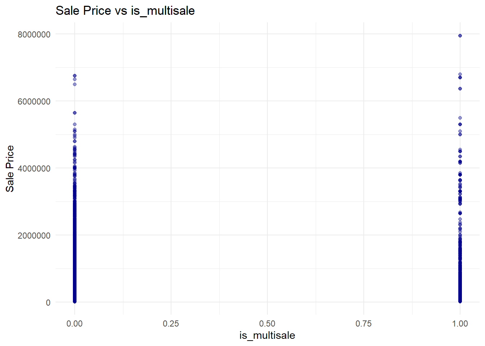

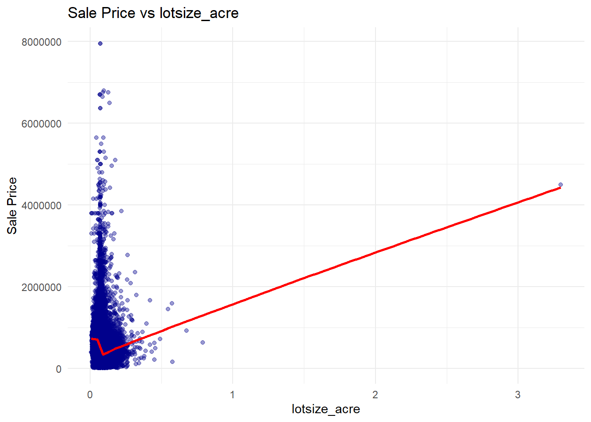


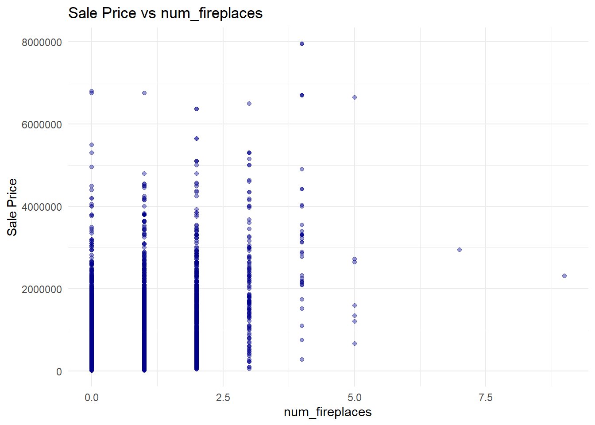

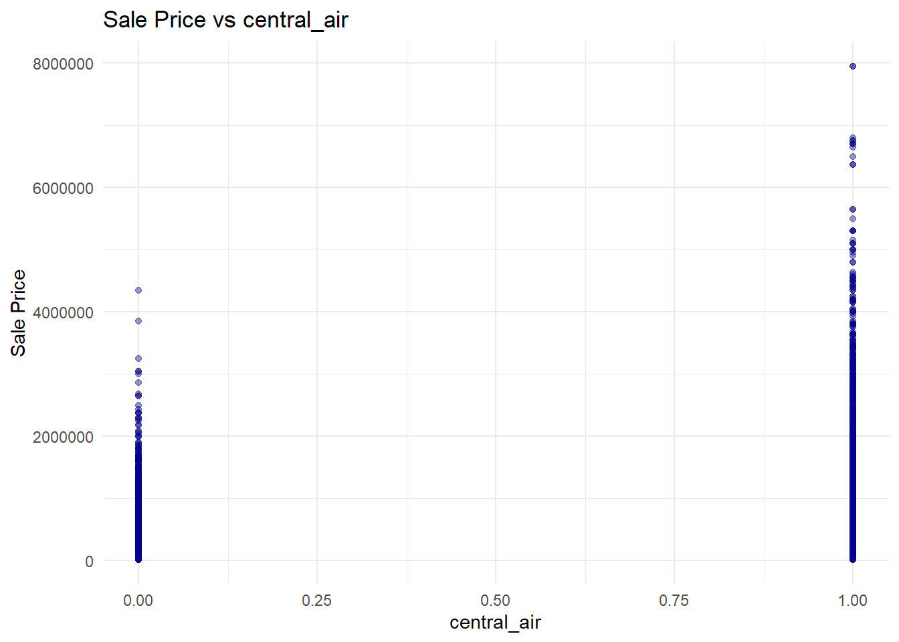


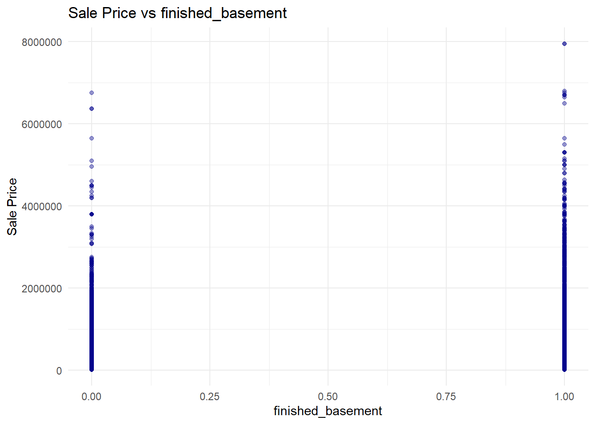

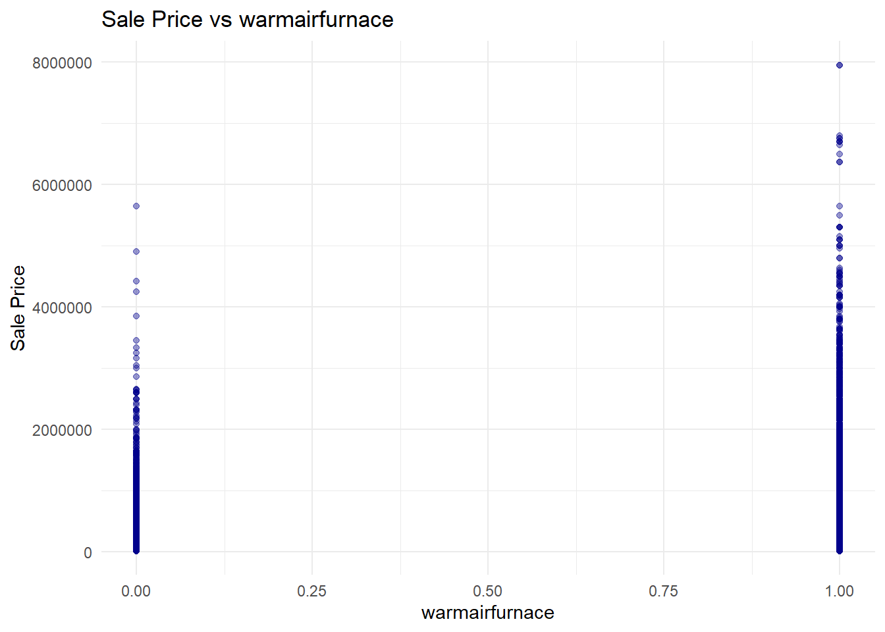
1) Log-transform building_000sf to fix right-skew
hist(log1p(train_df$building_000sf), breaks=30)
predictors2 <- c(
"year",
"sale_qrt",
"is_multisale",
"log1p(building_000sf)",
"building_age",
"lotsize_acre",
"num_bedrooms",
"num_full_baths",
"num_half_baths",
"num_fireplaces",
"garage_size",
"central_air",
"one_story",
"full_basement",
"finished_basement",
"brick_stone_ext",
"warmairfurnace"
)
f2 <- reformulate(termlabels = predictors2, response = "sale_price")
m2 <- lm(f2, data = train_df)
#summary(m2)
model_log <- model_log %>%
add_row(model = "m2", added = "log-transformed building_000sf",
cv_rmse = cv_rmse(f2, train_df),
# moran = moran_i_cv(train_df, predictors2),
notes = "Due to building_000sf right skewness")
#model_log <- model_log[-2, ] # to remove row
model_log# A tibble: 2 × 5
model added cv_rmse moran notes
<chr> <chr> <dbl> <dbl> <chr>
1 m1 Baseline 297569. 0.383 Original, untransformed v…
2 m2 log-transformed building_000sf 319205. NA Due to building_000sf rig…The log-transformation increased the RMSE. We will use the normal variable instead.
No change.
2) Adding categories for our categorical variables (that are not binary and have multiple categories)
This includes year, sale_qrt, num_bedrooms, num_full_baths, num_half_baths, num_fireplaces, garage_size.
We will test each one by one, using as.factor() and logging each factorization as a separate model log.
# 1. Categorize: YEAR
train_df <- train_df %>%
mutate(year = as.factor(year))
f3 <- reformulate(termlabels = predictors_baseline, response = "sale_price")
model_log <- model_log %>%
add_row(model = "m3",
added = "m1 + categorize year",
cv_rmse = cv_rmse(f3, train_df),
# moran = moran_i_cv(train_df, predictors_baseline),
notes = " ")
# 2. Categorize: SALE_QRT
train_df <- train_df %>%
mutate(sale_qrt = as.factor(sale_qrt))
f4 <- reformulate(termlabels = predictors_baseline, response = "sale_price")
model_log <- model_log %>%
add_row(model = "m4",
added = "m1 + categorize sale_qrt",
cv_rmse = cv_rmse(f4, train_df),
# moran = moran_i_cv(train_df, predictors_baseline),
notes = " ")
# 3. Categorize: NUM_BEDROOMS
train_df <- train_df %>%
mutate(num_bedrooms = as.factor(num_bedrooms))
f5 <- reformulate(termlabels = predictors_baseline, response = "sale_price")
model_log <- model_log %>%
add_row(model = "m5",
added = "m1 + categorize num_bedrooms",
cv_rmse = cv_rmse(f5, train_df),
# moran = moran_i_cv(train_df, predictors_baseline),
notes = " ")
# 4. Categorize: NUM_FULL_BATHS
train_df <- train_df %>%
mutate(num_full_baths = as.factor(num_full_baths))
f6 <- reformulate(termlabels = predictors_baseline, response = "sale_price")
model_log <- model_log %>%
add_row(model = "m6",
added = "m1 + categorize num_full_baths",
cv_rmse = cv_rmse(f6, train_df),
# moran = moran_i_cv(train_df, predictors_baseline),
notes = " ")
# 5. Categorize: NUM_HALF_BATHSs
train_df <- train_df %>%
mutate(num_half_baths = as.factor(num_half_baths))
f7 <- reformulate(termlabels = predictors_baseline, response = "sale_price")
model_log <- model_log %>%
add_row(model = "m7",
added = "m1 + categorize num_half_baths",
cv_rmse = cv_rmse(f7, train_df),
moran = moran_i_cv(train_df, predictors_baseline),
notes = " ")
# 6. Categorize: NUM_FIREPLACES
train_df <- train_df %>%
mutate(num_fireplaces = as.factor(num_fireplaces))
f8 <- reformulate(termlabels = predictors_baseline, response = "sale_price")
model_log <- model_log %>%
add_row(model = "m8",
added = "m1 + categorize num_fireplaces",
cv_rmse = cv_rmse(f8, train_df),
moran = moran_i_cv(train_df, predictors_baseline),
notes = " ")
# 7. Categorize: GARAGE_SIZE
train_df <- train_df %>%
mutate(garage_size = as.factor(garage_size))
f9 <- reformulate(termlabels = predictors_baseline, response = "sale_price")
model_log <- model_log %>%
add_row(model = "m9",
added = "m1 + categorize garage_size",
cv_rmse = cv_rmse(f9, train_df),
moran = moran_i_cv(train_df, predictors_baseline),
notes = " ")
model_log# A tibble: 9 × 5
model added cv_rmse moran notes
<chr> <chr> <dbl> <dbl> <chr>
1 m1 Baseline 297569. 0.383 "Original, untransformed …
2 m2 log-transformed building_000sf 319205. NA "Due to building_000sf ri…
3 m3 m1 + categorize year 297573. NA " "
4 m4 m1 + categorize sale_qrt 297302. NA " "
5 m5 m1 + categorize num_bedrooms 294714. NA " "
6 m6 m1 + categorize num_full_baths 283951. NA " "
7 m7 m1 + categorize num_half_baths 283366. 0.359 " "
8 m8 m1 + categorize num_fireplaces 282009. 0.355 " "
9 m9 m1 + categorize garage_size 281752. 0.353 " " #model_log <- model_log[-3, ] # to remove rowBased on categorisation of data, most improved the RMSE except num_full_baths and num_half_baths which will be unfactored.
Final factorisation on baseline model:
train_df <- train_df %>%
mutate(
num_full_baths = as.numeric(as.character(num_full_baths)),
num_half_baths = as.numeric(as.character(num_half_baths))
)
f10 <- reformulate(termlabels = predictors_baseline, response = "sale_price")
model_log <- model_log %>%
add_row(
model = "m10",
added = "baseline + categorized year, sale_qrt, num_bedrooms, garage_size, num_fireplaces",
cv_rmse = cv_rmse(f10, train_df),
moran = moran_i_cv(train_df, predictors_baseline),
notes = " "
)
model_log# A tibble: 10 × 5
model added cv_rmse moran notes
<chr> <chr> <dbl> <dbl> <chr>
1 m1 Baseline 297569. 0.383 "Ori…
2 m2 log-transformed building_000sf 319205. NA "Due…
3 m3 m1 + categorize year 297573. NA " "
4 m4 m1 + categorize sale_qrt 297302. NA " "
5 m5 m1 + categorize num_bedrooms 294714. NA " "
6 m6 m1 + categorize num_full_baths 283951. NA " "
7 m7 m1 + categorize num_half_baths 283366. 0.359 " "
8 m8 m1 + categorize num_fireplaces 282009. 0.355 " "
9 m9 m1 + categorize garage_size 281752. 0.353 " "
10 m10 baseline + categorized year, sale_qrt, num_bedroo… 290896. 0.368 " "#model_log <- model_log[-(10:18), ]Now that factorization is complete, we will test each subsequent transformation against previous model. If the RMSE is lowered, the transformation is kept. If the RMSE worsens, it is removed.
3) Squared term for building age
The scatterplot showed some bending for sale price against building age:
ggplot(train_df, aes(x = building_age, y = sale_price)) +
geom_point(alpha = 0.4, color = "darkblue") +
geom_smooth(#method = "lm", formula = y ~ x , #REMOVE LM TO PLOT SMOOTHING LINE INSTEAD
color = "red",
se = FALSE) +
theme_minimal() +
labs(
title = paste("Sale Price vs Building Age"),
x = "Building Age",
y = "Sale Price"
)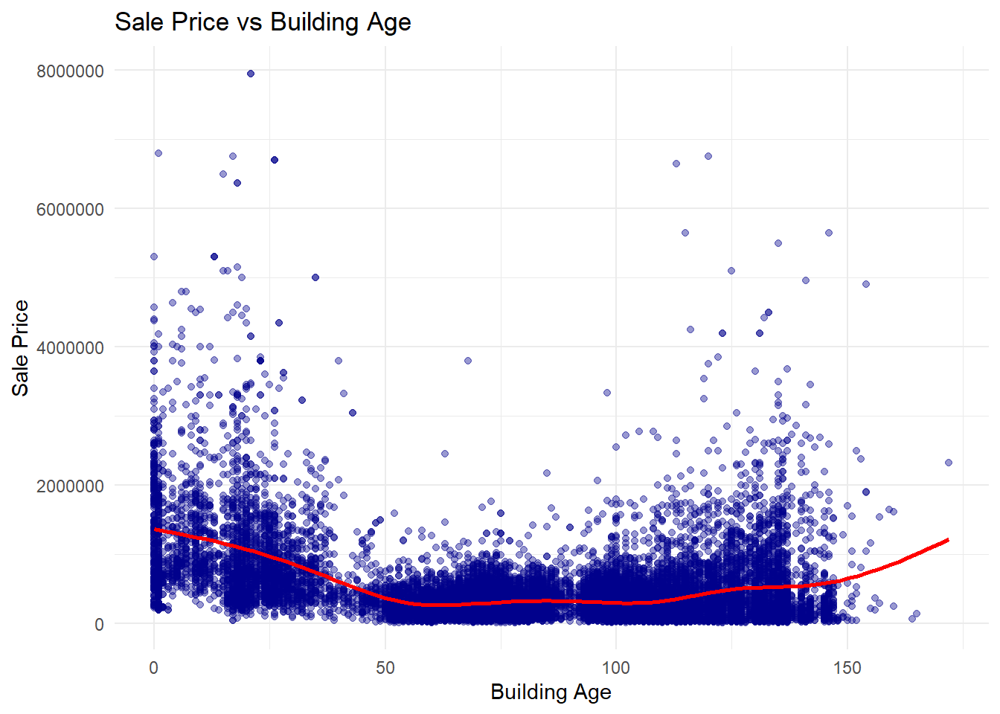
This is to be expected given that home values tend to drop with physical depreciation. But with much older buildings with historic charm/major renovations, that decline either flattens out or reverses.
We add a squared term to account for this bend in the line:
predictors11 <- c(
"year", # factorized
"sale_qrt", # factorized
"is_multisale",
"building_000sf",
"building_age",
"I(building_age^2)", # add squared term
"lotsize_acre",
"num_bedrooms", # factorized
"num_full_baths",
"num_half_baths",
"num_fireplaces", # factorized
"garage_size", # factorized
"central_air",
"one_story",
"full_basement",
"finished_basement",
"brick_stone_ext",
"warmairfurnace"
)
f11 <- reformulate(termlabels = predictors11, response = "sale_price")
model_log <- model_log %>%
add_row(
model = "m11",
added = "m10 + squared building_age",
cv_rmse = cv_rmse(f11, train_df),
moran = moran_i_cv(train_df, predictors11),
notes = "new predictor: I(building_age^2)"
)
print(model_log, n=40)# A tibble: 11 × 5
model added cv_rmse moran notes
<chr> <chr> <dbl> <dbl> <chr>
1 m1 Baseline 297569. 0.383 "Ori…
2 m2 log-transformed building_000sf 319205. NA "Due…
3 m3 m1 + categorize year 297573. NA " "
4 m4 m1 + categorize sale_qrt 297302. NA " "
5 m5 m1 + categorize num_bedrooms 294714. NA " "
6 m6 m1 + categorize num_full_baths 283951. NA " "
7 m7 m1 + categorize num_half_baths 283366. 0.359 " "
8 m8 m1 + categorize num_fireplaces 282009. 0.355 " "
9 m9 m1 + categorize garage_size 281752. 0.353 " "
10 m10 baseline + categorized year, sale_qrt, num_bedroo… 290896. 0.368 " "
11 m11 m10 + squared building_age 287936. 0.383 "new…#model_log <- model_log[-(13), ]RMSE improved!
4) Add log and squared term for lotsize_acre
The scatterplots show a relationship that changes/jumps for lotsize_acr, while the histogram shows a right skew.
predictors12 <- c(
"year", # factorized
"sale_qrt", # factorized
"is_multisale",
"building_000sf",
"building_age",
"I(building_age^2)", # add squared term
"log1p(lotsize_acre)", # logged
"num_bedrooms", # factorized
"num_full_baths",
"num_half_baths",
"num_fireplaces", # factorized
"garage_size", # factorized
"central_air",
"one_story",
"full_basement",
"finished_basement",
"brick_stone_ext",
"warmairfurnace"
)
f12 <- reformulate(termlabels = predictors12, response = "sale_price")
model_log <- model_log %>%
add_row(
model = "m12",
added = "m11 but with log(lotsize_acre)",
cv_rmse = cv_rmse(f12, train_df),
moran = moran_i_cv(train_df, predictors12),
notes = " "
)
ggplot(train_df, aes(x = I(log1p(lotsize_acre)), y = sale_price)) +
geom_point(alpha = 0.4, color = "darkblue") +
geom_smooth(#method = "lm", formula = y ~ x , #REMOVE LM TO PLOT SMOOTHING LINE INSTEAD
color = "red",
se = FALSE) +
theme_minimal() +
labs(
title = paste("Sale Price vs Log(Lot Size)"),
x = "Log of lot size (acre)",
y = "Sale price"
)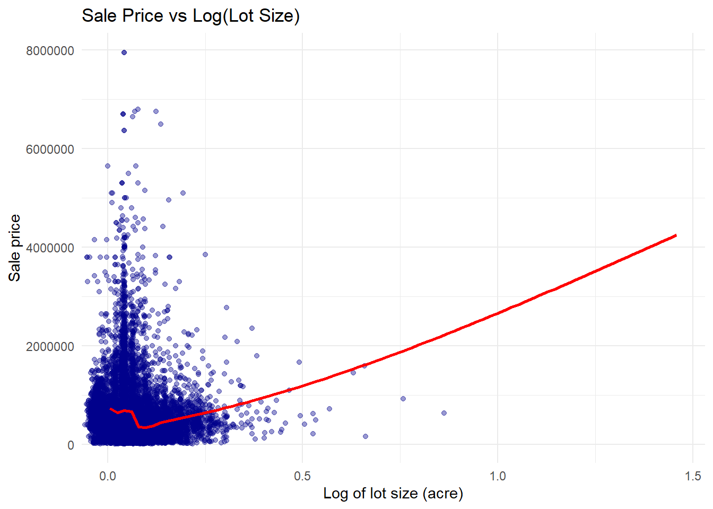
predictors13 <- c(
"year", # factorized
"sale_qrt", # factorized
"is_multisale",
"building_000sf",
"building_age",
"I(building_age^2)", # add squared term
"log1p(lotsize_acre)", # logged
"I(log1p(lotsize_acre)^2)", # add squared logged term
"num_bedrooms", # factorized
"num_full_baths",
"num_half_baths",
"num_fireplaces", # factorized
"garage_size", # factorized
"central_air",
"one_story",
"full_basement",
"finished_basement",
"brick_stone_ext",
"warmairfurnace"
)
f13 <- reformulate(termlabels = predictors13, response = "sale_price")
model_log <- model_log %>%
add_row(
model = "m13",
added = "m12 + squared term of log(lotsize_acre)",
cv_rmse = cv_rmse(f13, train_df),
moran = moran_i_cv(train_df, predictors13),
notes = " "
)
print(model_log, n=40)# A tibble: 13 × 5
model added cv_rmse moran notes
<chr> <chr> <dbl> <dbl> <chr>
1 m1 Baseline 297569. 0.383 "Ori…
2 m2 log-transformed building_000sf 319205. NA "Due…
3 m3 m1 + categorize year 297573. NA " "
4 m4 m1 + categorize sale_qrt 297302. NA " "
5 m5 m1 + categorize num_bedrooms 294714. NA " "
6 m6 m1 + categorize num_full_baths 283951. NA " "
7 m7 m1 + categorize num_half_baths 283366. 0.359 " "
8 m8 m1 + categorize num_fireplaces 282009. 0.355 " "
9 m9 m1 + categorize garage_size 281752. 0.353 " "
10 m10 baseline + categorized year, sale_qrt, num_bedroo… 290896. 0.368 " "
11 m11 m10 + squared building_age 287936. 0.383 "new…
12 m12 m11 but with log(lotsize_acre) 286581. 0.383 " "
13 m13 m12 + squared term of log(lotsize_acre) 294598. 0.363 " …The log transformation helped. The scatterplot of sale_price against log(lotsize_acre) still showed some bending in the graph, so a squared term of the log(lotsize_acre) was added, but it did not help.
Transformed: log(lotsize_acre) + no squared term added.
5) Add squared term for building_000sf
To address bending in scatterplot.
predictors14 <- c(
"year", # factorized
"sale_qrt", # factorized
"is_multisale",
"building_000sf",
"I(building_000sf^2)", # add squared term
"building_age",
"I(building_age^2)", # add squared term
"log1p(lotsize_acre)", # logged
"num_bedrooms", # factorized
"num_full_baths",
"num_half_baths",
"num_fireplaces",
"num_fireplaces", # factorized
"garage_size", # factorized
"one_story",
"full_basement",
"finished_basement",
"brick_stone_ext",
"warmairfurnace"
)
f14 <- reformulate(termlabels = predictors14, response = "sale_price")
model_log <- model_log %>%
add_row(
model = "m14",
added = "m12 + squared term of building_000sf",
cv_rmse = cv_rmse(f14, train_df),
moran = moran_i_cv(train_df, predictors14),
notes = " "
)
print(model_log, n=20)# A tibble: 14 × 5
model added cv_rmse moran notes
<chr> <chr> <dbl> <dbl> <chr>
1 m1 Baseline 297569. 0.383 "Ori…
2 m2 log-transformed building_000sf 319205. NA "Due…
3 m3 m1 + categorize year 297573. NA " "
4 m4 m1 + categorize sale_qrt 297302. NA " "
5 m5 m1 + categorize num_bedrooms 294714. NA " "
6 m6 m1 + categorize num_full_baths 283951. NA " "
7 m7 m1 + categorize num_half_baths 283366. 0.359 " "
8 m8 m1 + categorize num_fireplaces 282009. 0.355 " "
9 m9 m1 + categorize garage_size 281752. 0.353 " "
10 m10 baseline + categorized year, sale_qrt, num_bedroo… 290896. 0.368 " "
11 m11 m10 + squared building_age 287936. 0.383 "new…
12 m12 m11 but with log(lotsize_acre) 286581. 0.383 " "
13 m13 m12 + squared term of log(lotsize_acre) 294598. 0.363 " …
14 m14 m12 + squared term of building_000sf 279812. 0.396 " " #model_log <- model_log[-(14), ]RMSE improved.
Final baseline predictors
year (Factorized)sale_qrt (Factorized)is_multisalebuilding_000sfI(building_000sf^2) (Squared term)building_ageI(building_age^2) (Squared term)log1p(lotsize_acre) (Log-transformed: \(\log(1 + x)\))num_bedrooms (Factorized)num_full_bathsnum_half_bathsnum_fireplaces (Factorized)garage_size (Factorized)central_airone_storyfull_basementfinished_basementbrick_stone_extwarmairfurnaceviolent crime and property crime were added.
predictors15 <- c(
"year", # factorized
"sale_qrt", # factorized
"is_multisale",
"building_000sf",
"I(building_000sf^2)", # add squared term
"building_age",
"I(building_age^2)", # add squared term
"log1p(lotsize_acre)", # logged
"num_bedrooms", # factorized
"num_full_baths",
"num_half_baths",
"num_fireplaces", # factorized
"garage_size", # factorized
"central_air",
"one_story",
"full_basement",
"finished_basement",
"brick_stone_ext",
"warmairfurnace",
"violentcrime_660ft",
"propertycrime_660ft"
)
f15 <- reformulate(termlabels = predictors15, response = "sale_price")
model_log <- model_log %>%
add_row(
model = "m15",
added = "m14 + violentcrime_660ft + propertycrime_660ft",
cv_rmse = cv_rmse(f15, train_df),
moran = moran_i_cv(train_df, predictors15),
notes = " "
)
print(model_log, n=40)# A tibble: 15 × 5
model added cv_rmse moran notes
<chr> <chr> <dbl> <dbl> <chr>
1 m1 Baseline 297569. 0.383 "Ori…
2 m2 log-transformed building_000sf 319205. NA "Due…
3 m3 m1 + categorize year 297573. NA " "
4 m4 m1 + categorize sale_qrt 297302. NA " "
5 m5 m1 + categorize num_bedrooms 294714. NA " "
6 m6 m1 + categorize num_full_baths 283951. NA " "
7 m7 m1 + categorize num_half_baths 283366. 0.359 " "
8 m8 m1 + categorize num_fireplaces 282009. 0.355 " "
9 m9 m1 + categorize garage_size 281752. 0.353 " "
10 m10 baseline + categorized year, sale_qrt, num_bedroo… 290896. 0.368 " "
11 m11 m10 + squared building_age 287936. 0.383 "new…
12 m12 m11 but with log(lotsize_acre) 286581. 0.383 " "
13 m13 m12 + squared term of log(lotsize_acre) 294598. 0.363 " …
14 m14 m12 + squared term of building_000sf 279812. 0.396 " "
15 m15 m14 + violentcrime_660ft + propertycrime_660ft 270010. 0.361 " " RMSE improved.
Based on the skewed histograms and bending, a log transformation could potentially be applied.
hist(train_df$violentcrime_660ft, breaks=30)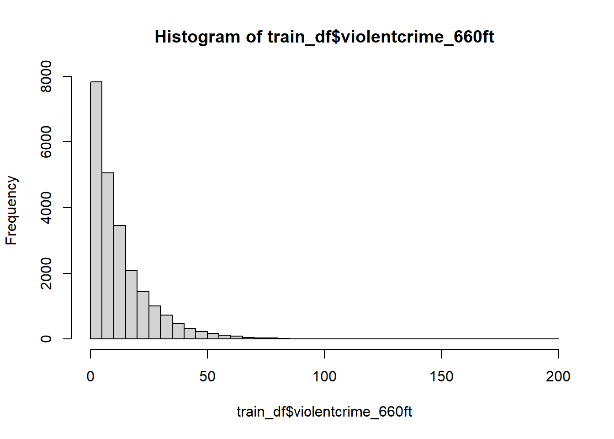
hist(train_df$propertycrime_660ft, breaks=30)
hist(log1p(train_df$violentcrime_660ft), breaks=30)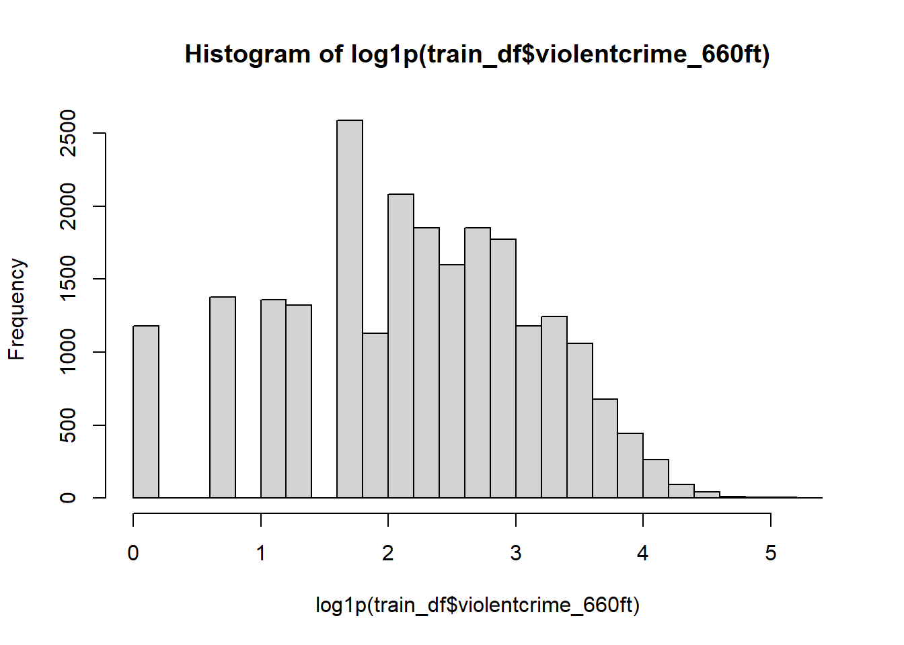
hist(log1p(train_df$propertycrime_660ft), breaks=30)
predictors16 <- c(
"year", # factorized
"sale_qrt", # factorized
"is_multisale",
"building_000sf",
"I(building_000sf^2)", # add squared term
"building_age",
"I(building_age^2)", # add squared term
"log1p(lotsize_acre)", # logged
"num_bedrooms", # factorized
"num_full_baths",
"num_half_baths",
"num_fireplaces", # factorized
"garage_size", # factorized
"central_air",
"one_story",
"full_basement",
"finished_basement",
"brick_stone_ext",
"warmairfurnace",
"log1p(violentcrime_660ft)",
"propertycrime_660ft"
)
f16 <- reformulate(termlabels = predictors16, response = "sale_price")
model_log <- model_log %>%
add_row(
model = "m16",
added = "log violentcrime_660ft from m15",
cv_rmse = cv_rmse(f16, train_df),
moran = moran_i_cv(train_df, predictors16),
notes = " "
)
predictors17 <- c(
"year", # factorized
"sale_qrt", # factorized
"is_multisale",
"building_000sf",
"I(building_000sf^2)", # add squared term
"building_age",
"I(building_age^2)", # add squared term
"log1p(lotsize_acre)", # logged
"num_bedrooms", # factorized
"num_full_baths",
"num_half_baths", # factorized
"num_fireplaces", # factorized
"garage_size",
"central_air",
"one_story",
"full_basement",
"finished_basement",
"brick_stone_ext",
"warmairfurnace",
"violentcrime_660ft",
"log1p(propertycrime_660ft)"
)
f17 <- reformulate(termlabels = predictors17, response = "sale_price")
model_log <- model_log %>%
add_row(
model = "m17",
added = "log propertycrime_660ft from m15",
cv_rmse = cv_rmse(f17, train_df),
notes = " "
)
print(model_log, n=30)# A tibble: 17 × 5
model added cv_rmse moran notes
<chr> <chr> <dbl> <dbl> <chr>
1 m1 Baseline 297569. 0.383 "Ori…
2 m2 log-transformed building_000sf 319205. NA "Due…
3 m3 m1 + categorize year 297573. NA " "
4 m4 m1 + categorize sale_qrt 297302. NA " "
5 m5 m1 + categorize num_bedrooms 294714. NA " "
6 m6 m1 + categorize num_full_baths 283951. NA " "
7 m7 m1 + categorize num_half_baths 283366. 0.359 " "
8 m8 m1 + categorize num_fireplaces 282009. 0.355 " "
9 m9 m1 + categorize garage_size 281752. 0.353 " "
10 m10 baseline + categorized year, sale_qrt, num_bedroo… 290896. 0.368 " "
11 m11 m10 + squared building_age 287936. 0.383 "new…
12 m12 m11 but with log(lotsize_acre) 286581. 0.383 " "
13 m13 m12 + squared term of log(lotsize_acre) 294598. 0.363 " …
14 m14 m12 + squared term of building_000sf 279812. 0.396 " "
15 m15 m14 + violentcrime_660ft + propertycrime_660ft 270010. 0.361 " "
16 m16 log violentcrime_660ft from m15 270340. 0.358 " "
17 m17 log propertycrime_660ft from m15 271608. NA " "#model_log <- model_log[-(16), ]RMSE worsened. No log transformations applied to original crime predictors.
Based on the scatterplots, a squared term could potentially help with bending:
ggplot(train_df, aes(x = violentcrime_660ft, y = sale_price)) +
geom_point(alpha = 0.4, color = "darkblue") +
geom_smooth(#method = "lm", formula = y ~ x , #REMOVE LM TO PLOT SMOOTHING LINE INSTEAD
color = "red",
se = FALSE) +
theme_minimal() +
labs(
title = paste("Sale Price vs Violent Crime"),
x = "Violent Crime within 660ft",
y = "Sale Price"
)
ggplot(train_df, aes(x = propertycrime_660ft, y = sale_price)) +
geom_point(alpha = 0.4, color = "darkblue") +
geom_smooth(#method = "lm", formula = y ~ x , #REMOVE LM TO PLOT SMOOTHING LINE INSTEAD
color = "red",
se = FALSE) +
theme_minimal() +
labs(
title = paste("Sale Price vs Violent Crime"),
x = "Violent Crime within 660ft",
y = "Sale Price"
)
predictors18 <- c(
"year", # factorized
"sale_qrt", # factorized
"is_multisale",
"building_000sf",
"I(building_000sf^2)", # add squared term
"building_age",
"I(building_age^2)", # add squared term
"log1p(lotsize_acre)", # logged
"num_bedrooms", # factorized
"num_full_baths",
"num_half_baths",
"num_fireplaces", # factorized
"garage_size", # factorized
"central_air",
"one_story",
"full_basement",
"finished_basement",
"brick_stone_ext",
"warmairfurnace",
"violentcrime_660ft",
"I(violentcrime_660ft^2)", # add squared term
"propertycrime_660ft",
"I(propertycrime_660ft^2)" # add squared term
)
f18 <- reformulate(termlabels = predictors18, response = "sale_price")
model_log <- model_log %>%
add_row(
model = "m18",
added = "m15 + 2 squared crime terms",
cv_rmse = cv_rmse(f18, train_df),
moran = moran_i_cv(train_df, predictors18),
notes = " "
)
print(model_log, n=40)# A tibble: 18 × 5
model added cv_rmse moran notes
<chr> <chr> <dbl> <dbl> <chr>
1 m1 Baseline 297569. 0.383 "Ori…
2 m2 log-transformed building_000sf 319205. NA "Due…
3 m3 m1 + categorize year 297573. NA " "
4 m4 m1 + categorize sale_qrt 297302. NA " "
5 m5 m1 + categorize num_bedrooms 294714. NA " "
6 m6 m1 + categorize num_full_baths 283951. NA " "
7 m7 m1 + categorize num_half_baths 283366. 0.359 " "
8 m8 m1 + categorize num_fireplaces 282009. 0.355 " "
9 m9 m1 + categorize garage_size 281752. 0.353 " "
10 m10 baseline + categorized year, sale_qrt, num_bedroo… 290896. 0.368 " "
11 m11 m10 + squared building_age 287936. 0.383 "new…
12 m12 m11 but with log(lotsize_acre) 286581. 0.383 " "
13 m13 m12 + squared term of log(lotsize_acre) 294598. 0.363 " …
14 m14 m12 + squared term of building_000sf 279812. 0.396 " "
15 m15 m14 + violentcrime_660ft + propertycrime_660ft 270010. 0.361 " "
16 m16 log violentcrime_660ft from m15 270340. 0.358 " "
17 m17 log propertycrime_660ft from m15 271608. NA " "
18 m18 m15 + 2 squared crime terms 268475. 0.353 " "#model_log <- model_log[-(19), ]RMSE improved with the 2 squared crime terms!
library(DT)
print(model_log, n=20)# A tibble: 18 × 5
model added cv_rmse moran notes
<chr> <chr> <dbl> <dbl> <chr>
1 m1 Baseline 297569. 0.383 "Ori…
2 m2 log-transformed building_000sf 319205. NA "Due…
3 m3 m1 + categorize year 297573. NA " "
4 m4 m1 + categorize sale_qrt 297302. NA " "
5 m5 m1 + categorize num_bedrooms 294714. NA " "
6 m6 m1 + categorize num_full_baths 283951. NA " "
7 m7 m1 + categorize num_half_baths 283366. 0.359 " "
8 m8 m1 + categorize num_fireplaces 282009. 0.355 " "
9 m9 m1 + categorize garage_size 281752. 0.353 " "
10 m10 baseline + categorized year, sale_qrt, num_bedroo… 290896. 0.368 " "
11 m11 m10 + squared building_age 287936. 0.383 "new…
12 m12 m11 but with log(lotsize_acre) 286581. 0.383 " "
13 m13 m12 + squared term of log(lotsize_acre) 294598. 0.363 " …
14 m14 m12 + squared term of building_000sf 279812. 0.396 " "
15 m15 m14 + violentcrime_660ft + propertycrime_660ft 270010. 0.361 " "
16 m16 log violentcrime_660ft from m15 270340. 0.358 " "
17 m17 log propertycrime_660ft from m15 271608. NA " "
18 m18 m15 + 2 squared crime terms 268475. 0.353 " "datatable(model_log, options = list(scrollX = TRUE))List of predictors now
year (Factorized)
sale_qrt (Factorized)
is_multisale
building_000sf
I(building_000sf^2) (Squared term)
building_age
I(building_age^2) (Squared term)
log1p(lotsize_acre) (Log-transformed: \(\log(1 + x)\))
num_bedrooms (Factorized)
num_full_baths
num_half_baths
num_fireplaces (Factorized)
garage_size (Factorized)
central_air
one_story
full_basement
finished_basement
brick_stone_ext
warmairfurnace
violentcrime_660ft
I(violentcrime_660ft^2) (Squared term)
propertycrime_660ft
I(propertycrime_660ft^2) (Squared term)
predictors_gil_base <- c(
"construction_activity",
"downtown_drive_time",
"average_distance_to_work"
)
# DO ANY OF THE PREDICTORS NEED TO BE SQUARED?
for (pred in predictors_gil_base) {
p <- ggplot(train_df, aes(x = !!parse_expr(pred), y = sale_price)) +
geom_point(alpha = 0.4, color = "darkblue") +
geom_smooth(method = "lm", formula = y ~ x , #REMOVE LM TO PLOT SMOOTHING LINE INSTEAD
color = "red",
se = FALSE) +
theme_minimal() +
labs(
title = paste("Sale Price vs", pred),
x = pred,
y = "Sale Price"
)
print(p)
}
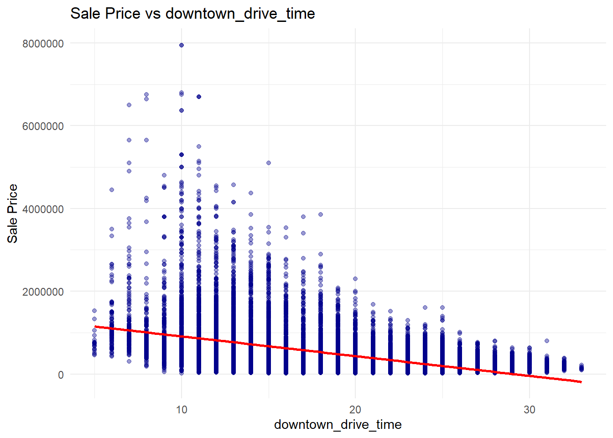

# DO ANY OF THE PREDICTORS NEED TO BE LOG-TRANSFORMED?
for (pred in predictors_gil_base) {
p <- ggplot(train_df, aes(x = .data[[pred]])) +
geom_histogram(bins = 30, fill = "steelblue", color = "white", alpha = 0.8) +
theme_minimal() +
labs(
title = paste("Distribution of", pred),
x = pred,
y = "Count"
)
print(p)
}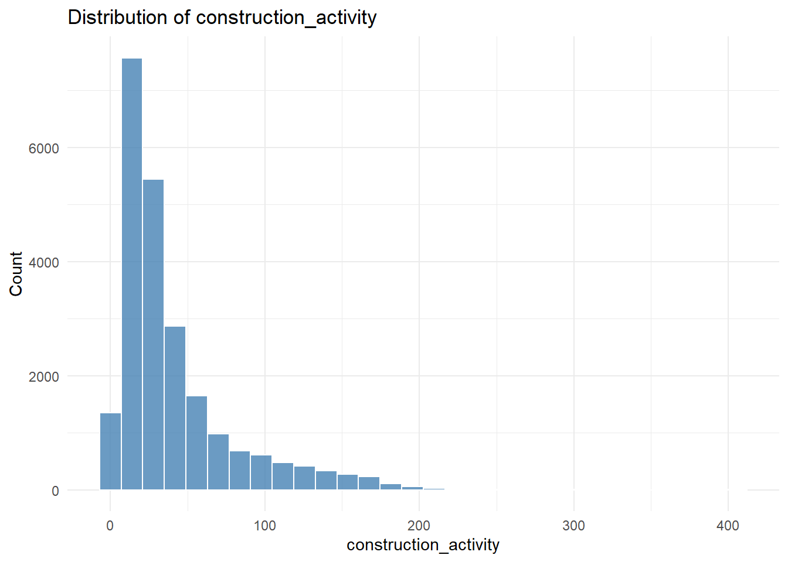


# MODEL BUILDING (keeping outliers)
predictors_gil <- c(
"year", # factorized
"sale_qrt", # factorized
"is_multisale",
"building_000sf",
"I(building_000sf^2)", # add squared term
"building_age",
"I(building_age^2)", # add squared term
"log1p(lotsize_acre)", # logged
"num_bedrooms", # factorized
"num_full_baths",
"num_half_baths",
"num_fireplaces", # factorized
"garage_size", # factorized
"central_air",
"one_story",
"full_basement",
"finished_basement",
"brick_stone_ext",
"warmairfurnace",
"violentcrime_660ft",
"I(violentcrime_660ft^2)", # add squared term
"propertycrime_660ft",
"I(propertycrime_660ft^2)", # add squared term
"construction_activity",
"I(downtown_drive_time^2)",
"log1p(average_distance_to_work)"
)
# the transformations of these predictors were obtained simply via trial-and-error.
f_gil1 <- reformulate(termlabels = predictors_gil, response = "sale_price")
model_log <- model_log %>%
add_row(
model = "m_gil1",
added = "m18 + gil's added variables",
cv_rmse = cv_rmse(f_gil1, train_df),
moran = moran_i_cv(train_df, predictors_gil),
notes = " "
)
print(model_log, n=100)# A tibble: 19 × 5
model added cv_rmse moran notes
<chr> <chr> <dbl> <dbl> <chr>
1 m1 Baseline 297569. 0.383 "Ori…
2 m2 log-transformed building_000sf 319205. NA "Due…
3 m3 m1 + categorize year 297573. NA " "
4 m4 m1 + categorize sale_qrt 297302. NA " "
5 m5 m1 + categorize num_bedrooms 294714. NA " "
6 m6 m1 + categorize num_full_baths 283951. NA " "
7 m7 m1 + categorize num_half_baths 283366. 0.359 " "
8 m8 m1 + categorize num_fireplaces 282009. 0.355 " "
9 m9 m1 + categorize garage_size 281752. 0.353 " "
10 m10 baseline + categorized year, sale_qrt, num_bedro… 290896. 0.368 " "
11 m11 m10 + squared building_age 287936. 0.383 "new…
12 m12 m11 but with log(lotsize_acre) 286581. 0.383 " "
13 m13 m12 + squared term of log(lotsize_acre) 294598. 0.363 " …
14 m14 m12 + squared term of building_000sf 279812. 0.396 " "
15 m15 m14 + violentcrime_660ft + propertycrime_660ft 270010. 0.361 " "
16 m16 log violentcrime_660ft from m15 270340. 0.358 " "
17 m17 log propertycrime_660ft from m15 271608. NA " "
18 m18 m15 + 2 squared crime terms 268475. 0.353 " "
19 m_gil1 m18 + gil's added variables 232478. 0.288 " "# improvement of ~35k!train_df <- all_sales %>%
st_drop_geometry() %>%
filter(split == "train")predictors_carenna_base <- c(
"edulevelpct",
"medincomeE",
"vacantE"
)
# DO ANY OF THE PREDICTORS NEED TO BE SQUARED?
# Look for curvature in the red smoothing line (a U or arch shape suggests a squared term)
for (pred in predictors_carenna_base) {
p <- ggplot(train_df, aes(x = .data[[pred]], y = sale_price)) +
geom_point(alpha = 0.4, color = "darkblue") +
geom_smooth(method = "loess", formula = y ~ x,
color = "red",
se = FALSE) +
theme_minimal() +
labs(
title = paste("Sale Price vs", pred),
x = pred,
y = "Sale Price"
)
print(p)
}


# DO ANY OF THE PREDICTORS NEED TO BE LOG-TRANSFORMED?
# Look for strong right skew (long tail to the right) in the histograms
for (pred in predictors_carenna_base) {
p <- ggplot(train_df, aes(x = .data[[pred]])) +
geom_histogram(bins = 30, fill = "steelblue", color = "white", alpha = 0.8) +
theme_minimal() +
labs(
title = paste("Distribution of", pred),
x = pred,
y = "Count"
)
print(p)
}
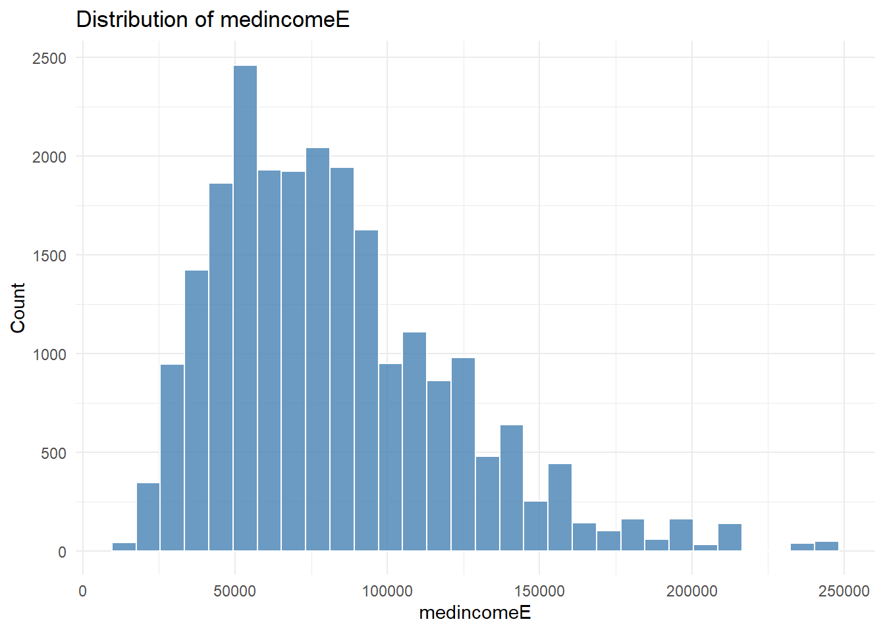

train_df <- all_sales %>%
st_drop_geometry() %>%
filter(split == "train")
med <- median(all_sales$medincomeE[all_sales$split == "train"], na.rm = TRUE)
all_sales <- all_sales %>%
mutate(
medincome_missing = as.integer(is.na(medincomeE)),
medincomeE = ifelse(is.na(medincomeE), med, medincomeE)
)
train_df <- all_sales %>%
st_drop_geometry() %>%
filter(split == "train")
colSums(is.na(train_df))[colSums(is.na(train_df)) > 0]named numeric(0)predictors_carenna <- c(
"year", # factorized
"sale_qrt", # factorized
"is_multisale",
"building_000sf",
"I(building_000sf^2)", # add squared term
"building_age",
"I(building_age^2)", # add squared term
"log1p(lotsize_acre)", # logged
"num_bedrooms", # factorized
"num_full_baths",
"num_half_baths",
"num_fireplaces", # factorized
"garage_size", # factorized
"central_air",
"one_story",
"full_basement",
"finished_basement",
"brick_stone_ext",
"warmairfurnace",
"violentcrime_660ft",
"I(violentcrime_660ft^2)", # add squared term
"propertycrime_660ft",
"I(propertycrime_660ft^2)", # add squared term
"construction_activity",
"I(downtown_drive_time^2)",
"log1p(average_distance_to_work)",
"edulevelpct",
"log1p(vacantE)" #problems with median income when putting all the variables in one code so decided to leave it out
)
f_carenna1 <- reformulate(termlabels = predictors_carenna, response = "sale_price")
model_log <- model_log %>%
add_row(
model = "m_carenna1",
added = "m18 + carenna's added variables",
cv_rmse = cv_rmse(f_carenna1, train_df),
moran = moran_i_cv(train_df, predictors_carenna),
notes = " "
)
print(model_log, n=100)# A tibble: 20 × 5
model added cv_rmse moran notes
<chr> <chr> <dbl> <dbl> <chr>
1 m1 Baseline 297569. 0.383 "Ori…
2 m2 log-transformed building_000sf 319205. NA "Due…
3 m3 m1 + categorize year 297573. NA " "
4 m4 m1 + categorize sale_qrt 297302. NA " "
5 m5 m1 + categorize num_bedrooms 294714. NA " "
6 m6 m1 + categorize num_full_baths 283951. NA " "
7 m7 m1 + categorize num_half_baths 283366. 0.359 " "
8 m8 m1 + categorize num_fireplaces 282009. 0.355 " "
9 m9 m1 + categorize garage_size 281752. 0.353 " "
10 m10 baseline + categorized year, sale_qrt, num_b… 290896. 0.368 " "
11 m11 m10 + squared building_age 287936. 0.383 "new…
12 m12 m11 but with log(lotsize_acre) 286581. 0.383 " "
13 m13 m12 + squared term of log(lotsize_acre) 294598. 0.363 " …
14 m14 m12 + squared term of building_000sf 279812. 0.396 " "
15 m15 m14 + violentcrime_660ft + propertycrime_660… 270010. 0.361 " "
16 m16 log violentcrime_660ft from m15 270340. 0.358 " "
17 m17 log propertycrime_660ft from m15 271608. NA " "
18 m18 m15 + 2 squared crime terms 268475. 0.353 " "
19 m_gil1 m18 + gil's added variables 232478. 0.288 " "
20 m_carenna1 m18 + carenna's added variables 272395. 0.196 " "RMSE improved!! YAYY
predictors_cindy_base <- c(
"nearest_school_rating_math",
"distance_to_school_ft",
"distance_to_city_hall_ft"
)
# DO ANY OF THE PREDICTORS NEED TO BE SQUARED?
for (pred in predictors_cindy_base) {
p <- ggplot(train_df, aes(x = .data[[pred]], y = sale_price)) +
geom_point(alpha = 0.4, color = "darkblue") +
geom_smooth(method = "loess", formula = y ~ x,
color = "red",
se = FALSE) +
theme_minimal() +
labs(
title = paste("Sale Price vs", pred),
x = pred,
y = "Sale Price"
)
print(p)
}
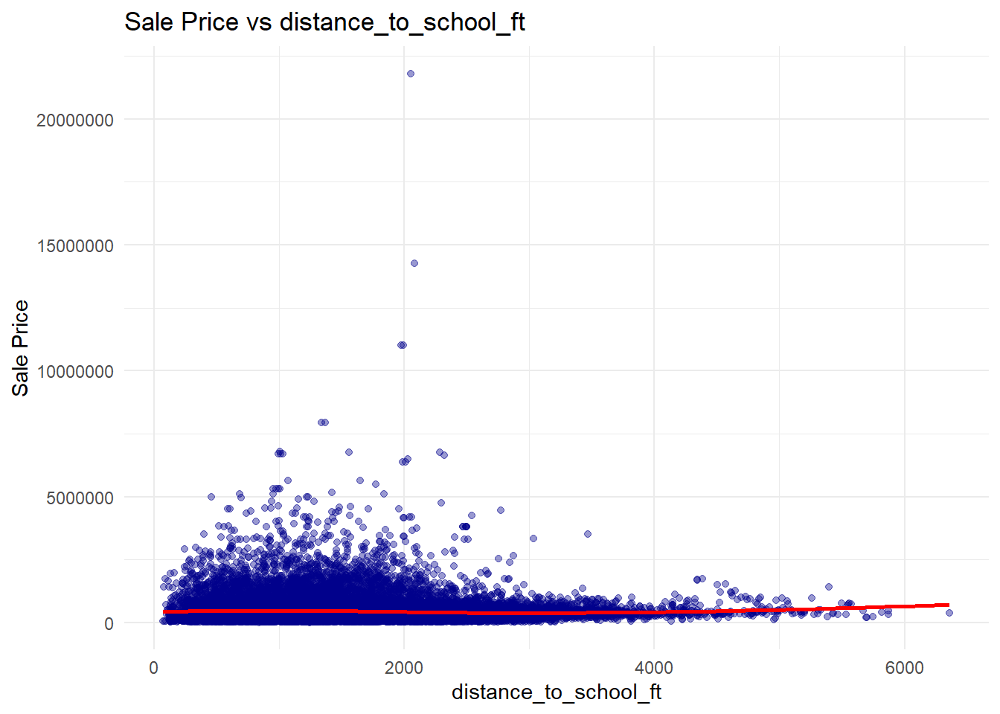
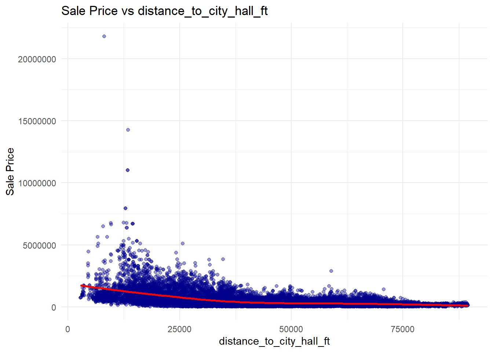
# DO ANY OF THE PREDICTORS NEED TO BE LOG-TRANSFORMED?
# yes, all three are right-skewed
for (pred in predictors_cindy_base) {
p <- ggplot(train_df, aes(x = .data[[pred]])) +
geom_histogram(bins = 30, fill = "steelblue", color = "white", alpha = 0.8) +
theme_minimal() +
labs(
title = paste("Distribution of", pred),
x = pred,
y = "Count"
)
print(p)
}


predictors_cindy <- c(
"year", # factorized
"sale_qrt", # factorized
"is_multisale",
"building_000sf",
"I(building_000sf^2)", # add squared term
"building_age",
"I(building_age^2)", # add squared term
"log1p(lotsize_acre)", # logged
"num_bedrooms", # factorized
"num_full_baths",
"num_half_baths",
"num_fireplaces", # factorized
"garage_size", # factorized
"central_air",
"one_story",
"full_basement",
"finished_basement",
"brick_stone_ext",
"warmairfurnace",
"violentcrime_660ft",
"I(violentcrime_660ft^2)", # add squared term
"propertycrime_660ft",
"I(propertycrime_660ft^2)", # add squared term
"construction_activity",
"I(downtown_drive_time^2)",
"log1p(average_distance_to_work)",
"edulevelpct",
"log1p(vacantE)",
"log1p(nearest_school_rating_math)",
"log1p(distance_to_school_ft)",
"log1p(distance_to_city_hall_ft)"
)
f_cindy1 <- reformulate(termlabels = predictors_cindy, response = "sale_price")
model_log <- model_log %>%
add_row(
model = "m_cindy",
added = "m18 + carenna's added variables",
cv_rmse = cv_rmse(f_carenna1, train_df),
moran = moran_i_cv(train_df, predictors_cindy),
notes = ""
)
print(model_log, n=100)# A tibble: 21 × 5
model added cv_rmse moran notes
<chr> <chr> <dbl> <dbl> <chr>
1 m1 Baseline 297569. 0.383 "Ori…
2 m2 log-transformed building_000sf 319205. NA "Due…
3 m3 m1 + categorize year 297573. NA " "
4 m4 m1 + categorize sale_qrt 297302. NA " "
5 m5 m1 + categorize num_bedrooms 294714. NA " "
6 m6 m1 + categorize num_full_baths 283951. NA " "
7 m7 m1 + categorize num_half_baths 283366. 0.359 " "
8 m8 m1 + categorize num_fireplaces 282009. 0.355 " "
9 m9 m1 + categorize garage_size 281752. 0.353 " "
10 m10 baseline + categorized year, sale_qrt, num_b… 290896. 0.368 " "
11 m11 m10 + squared building_age 287936. 0.383 "new…
12 m12 m11 but with log(lotsize_acre) 286581. 0.383 " "
13 m13 m12 + squared term of log(lotsize_acre) 294598. 0.363 " …
14 m14 m12 + squared term of building_000sf 279812. 0.396 " "
15 m15 m14 + violentcrime_660ft + propertycrime_660… 270010. 0.361 " "
16 m16 log violentcrime_660ft from m15 270340. 0.358 " "
17 m17 log propertycrime_660ft from m15 271608. NA " "
18 m18 m15 + 2 squared crime terms 268475. 0.353 " "
19 m_gil1 m18 + gil's added variables 232478. 0.288 " "
20 m_carenna1 m18 + carenna's added variables 272395. 0.196 " "
21 m_cindy m18 + carenna's added variables 272395. 0.193 "" Show your final model, the model log, and baseline vs. final residual maps.
# OUR FINAL MODEL
train_sf <- all_sales %>%
filter(split == "train")
train_df <- train_df %>%
mutate(across(c(year, sale_qrt, num_bedrooms, num_fireplaces, garage_size), as.factor))
predictors_final <- c(
"year", # factorized
"sale_qrt", # factorized
"is_multisale",
"building_000sf",
"I(building_000sf^2)", # add squared term
"building_age",
"I(building_age^2)", # add squared term
"log1p(lotsize_acre)", # logged
"num_bedrooms", # factorized
"num_full_baths",
"num_half_baths",
"num_fireplaces", # factorized
"garage_size", # factorized
"central_air",
"one_story",
"full_basement",
"finished_basement",
"brick_stone_ext",
"warmairfurnace",
"violentcrime_660ft",
"I(violentcrime_660ft^2)", # add squared term
"propertycrime_660ft",
"I(propertycrime_660ft^2)", # add squared term
"construction_activity",
"I(downtown_drive_time^2)",
"log1p(average_distance_to_work)",
"edulevelpct",
"log1p(vacantE)",
"log1p(nearest_school_rating_math)",
"log1p(distance_to_school_ft)",
"log1p(distance_to_city_hall_ft)"
)
f_final <- reformulate(termlabels = predictors_final, response = "sale_price")
model_log <- model_log %>%
add_row(
model = "finalmodel",
added = "all",
cv_rmse = cv_rmse(f_final, train_sf),
moran = moran_i_cv(train_df, predictors_final),
notes = ""
)
print(model_log, n=40)# A tibble: 22 × 5
model added cv_rmse moran notes
<chr> <chr> <dbl> <dbl> <chr>
1 m1 Baseline 297569. 0.383 "Ori…
2 m2 log-transformed building_000sf 319205. NA "Due…
3 m3 m1 + categorize year 297573. NA " "
4 m4 m1 + categorize sale_qrt 297302. NA " "
5 m5 m1 + categorize num_bedrooms 294714. NA " "
6 m6 m1 + categorize num_full_baths 283951. NA " "
7 m7 m1 + categorize num_half_baths 283366. 0.359 " "
8 m8 m1 + categorize num_fireplaces 282009. 0.355 " "
9 m9 m1 + categorize garage_size 281752. 0.353 " "
10 m10 baseline + categorized year, sale_qrt, num_b… 290896. 0.368 " "
11 m11 m10 + squared building_age 287936. 0.383 "new…
12 m12 m11 but with log(lotsize_acre) 286581. 0.383 " "
13 m13 m12 + squared term of log(lotsize_acre) 294598. 0.363 " …
14 m14 m12 + squared term of building_000sf 279812. 0.396 " "
15 m15 m14 + violentcrime_660ft + propertycrime_660… 270010. 0.361 " "
16 m16 log violentcrime_660ft from m15 270340. 0.358 " "
17 m17 log propertycrime_660ft from m15 271608. NA " "
18 m18 m15 + 2 squared crime terms 268475. 0.353 " "
19 m_gil1 m18 + gil's added variables 232478. 0.288 " "
20 m_carenna1 m18 + carenna's added variables 272395. 0.196 " "
21 m_cindy m18 + carenna's added variables 272395. 0.193 ""
22 finalmodel all 271036. 0.183 "" finalmodel <- lm(f_final, data = train_df)
summary(finalmodel)
Call:
lm(formula = f_final, data = train_df)
Residuals:
Min 1Q Median 3Q Max
-2991286 -94801 963 88516 20576137
Coefficients:
Estimate Std. Error t value
(Intercept) 1563311.632 114372.471 13.669
year2024 19714.399 4268.709 4.618
year2025 47675.447 4656.002 10.240
sale_qrt2 28068.963 5180.866 5.418
sale_qrt3 27470.103 5229.858 5.253
sale_qrt4 24670.748 5815.188 4.242
is_multisale 89462.901 8342.347 10.724
building_000sf -122584.174 10851.288 -11.297
I(building_000sf^2) 81939.167 1710.279 47.910
building_age -2654.307 290.913 -9.124
I(building_age^2) 10.258 1.846 5.556
log1p(lotsize_acre) 812307.190 71547.913 11.353
num_bedrooms2 19248.514 44124.791 0.436
num_bedrooms3 4544.215 44146.954 0.103
num_bedrooms4 -4350.943 44522.067 -0.098
num_bedrooms5 20728.895 45535.009 0.455
num_bedrooms6 66053.554 47694.248 1.385
num_bedrooms7 82964.408 63120.954 1.314
num_bedrooms8 -262978.578 90582.076 -2.903
num_bedrooms9 127035.031 96176.723 1.321
num_bedrooms12 -1620187.415 204261.626 -7.932
num_full_baths 61323.749 4369.684 14.034
num_half_baths 13454.873 4188.059 3.213
num_fireplaces1 -25986.170 6129.789 -4.239
num_fireplaces2 90896.679 11957.938 7.601
num_fireplaces3 294367.763 25956.423 11.341
num_fireplaces4 879383.713 49007.541 17.944
num_fireplaces5 199811.279 106818.094 1.871
num_fireplaces7 -879543.447 279272.668 -3.149
num_fireplaces9 -72228.910 278542.527 -0.259
garage_size1 14989.973 5558.451 2.697
garage_size2 33823.511 4911.011 6.887
garage_size3 146487.875 18676.903 7.843
garage_size4 509132.384 54352.375 9.367
central_air -2337.938 4909.596 -0.476
one_story 47220.390 4864.085 9.708
full_basement 52775.067 4631.266 11.395
finished_basement 44003.805 4449.160 9.890
brick_stone_ext -28029.982 4282.894 -6.545
warmairfurnace 25872.816 5447.715 4.749
violentcrime_660ft -3710.742 413.540 -8.973
I(violentcrime_660ft^2) 23.674 4.536 5.218
propertycrime_660ft -215.277 291.637 -0.738
I(propertycrime_660ft^2) -7.070 1.752 -4.034
construction_activity 3632.977 94.448 38.465
I(downtown_drive_time^2) 125.948 18.878 6.672
log1p(average_distance_to_work) -109306.836 10364.075 -10.547
edulevelpct 3416.883 148.701 22.978
log1p(vacantE) -3984.219 1623.233 -2.454
log1p(nearest_school_rating_math) 41753.389 3282.682 12.719
log1p(distance_to_school_ft) -198.098 3275.656 -0.060
log1p(distance_to_city_hall_ft) -64546.269 9838.569 -6.561
Pr(>|t|)
(Intercept) < 0.0000000000000002 ***
year2024 0.00000388880050469 ***
year2025 < 0.0000000000000002 ***
sale_qrt2 0.00000006093395954 ***
sale_qrt3 0.00000015133162613 ***
sale_qrt4 0.00002219345136727 ***
is_multisale < 0.0000000000000002 ***
building_000sf < 0.0000000000000002 ***
I(building_000sf^2) < 0.0000000000000002 ***
building_age < 0.0000000000000002 ***
I(building_age^2) 0.00000002793351131 ***
log1p(lotsize_acre) < 0.0000000000000002 ***
num_bedrooms2 0.66267
num_bedrooms3 0.91802
num_bedrooms4 0.92215
num_bedrooms5 0.64895
num_bedrooms6 0.16608
num_bedrooms7 0.18873
num_bedrooms8 0.00370 **
num_bedrooms9 0.18656
num_bedrooms12 0.00000000000000225 ***
num_full_baths < 0.0000000000000002 ***
num_half_baths 0.00132 **
num_fireplaces1 0.00002250608006105 ***
num_fireplaces2 0.00000000000003041 ***
num_fireplaces3 < 0.0000000000000002 ***
num_fireplaces4 < 0.0000000000000002 ***
num_fireplaces5 0.06142 .
num_fireplaces7 0.00164 **
num_fireplaces9 0.79540
garage_size1 0.00701 **
garage_size2 0.00000000000583252 ***
garage_size3 0.00000000000000458 ***
garage_size4 < 0.0000000000000002 ***
central_air 0.63394
one_story < 0.0000000000000002 ***
full_basement < 0.0000000000000002 ***
finished_basement < 0.0000000000000002 ***
brick_stone_ext 0.00000000006088810 ***
warmairfurnace 0.00000205347811607 ***
violentcrime_660ft < 0.0000000000000002 ***
I(violentcrime_660ft^2) 0.00000018194226246 ***
propertycrime_660ft 0.46042
I(propertycrime_660ft^2) 0.00005493665172460 ***
construction_activity < 0.0000000000000002 ***
I(downtown_drive_time^2) 0.00000000002584789 ***
log1p(average_distance_to_work) < 0.0000000000000002 ***
edulevelpct < 0.0000000000000002 ***
log1p(vacantE) 0.01412 *
log1p(nearest_school_rating_math) < 0.0000000000000002 ***
log1p(distance_to_school_ft) 0.95178
log1p(distance_to_city_hall_ft) 0.00000000005474782 ***
---
Signif. codes: 0 '***' 0.001 '**' 0.01 '*' 0.05 '.' 0.1 ' ' 1
Residual standard error: 277500 on 23148 degrees of freedom
Multiple R-squared: 0.7422, Adjusted R-squared: 0.7417
F-statistic: 1307 on 51 and 23148 DF, p-value: < 0.00000000000000022# BASELINE VS. FINAL RESIDUAL MAPS
train_sf <- all_sales %>%
filter(split == "train")
f_baseline <- reformulate(
termlabels = predictors_baseline,
response = "sale_price"
)
# f_final should use the predictor list for your chosen final model
# f_final <- reformulate(predictors_final, response = "sale_price")
baseline_resid <- train_sf$sale_price - cv_pred(f_baseline, train_sf)
final_resid <- train_sf$sale_price - cv_pred(f_final, train_sf)
residual_maps <- bind_rows(
train_sf %>% mutate(model = "Baseline", residual = baseline_resid),
train_sf %>% mutate(model = "Final", residual = final_resid)
)
# THERE IS HIGH SKEW
summary(residual_maps$residual) Min. 1st Qu. Median Mean 3rd Qu. Max.
-3704389.0 -116809.0 -1749.6 -20.4 102629.2 20799964.4 quantile(residual_maps$residual, c(.01, .05, .25, .5, .75, .95, .99), na.rm = TRUE) 1% 5% 25% 50% 75% 95%
-641288.367 -359001.039 -116809.001 -1749.633 102629.194 322580.500
99%
800584.566 #
library(scales)
ggplot(residual_maps %>% arrange(abs(residual))) +
geom_sf(aes(color = residual), size = 0.8, alpha = 0.8) +
facet_wrap(~model) +
scale_color_gradient2(
low = "blue", mid = "grey85", high = "red",
midpoint = 0,
trans = pseudo_log_trans(sigma = median(abs(residual_maps$residual))), # sigma ~ a "typical small" residual in $
labels = label_dollar(),
breaks = c(-1e6, -1e5, -1e4, 0, 1e4, 1e5, 1e6),
name = "Residual\n(actual - predicted)"
) +
theme_minimal()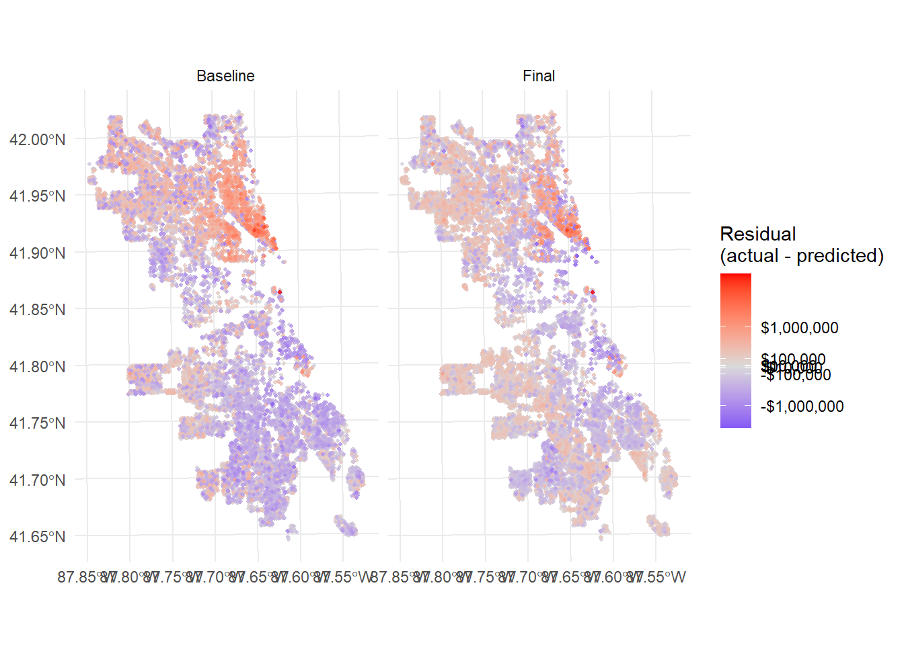
Answer: What helped most, and what disappointed you? Use your log.
Your answer:
The final RMSE is 271036. Our baseline model was 297569. The final RMSE was still higher than previous models we tested on, indicating that it is predicting unseen data a little worse. However, standard cross-validation does not account for spatial factors - since Moran’s I is better, it indicates the model has better captured spatial patterns in the data.
The transformations of the variables, especially the addition of the squared variables helped the most.
The variables that disappointed us the most is actually not included in the model. It includes things like flood score, which we thought might be a powerful variable given that Chicago experiences high levels of flooding.
4A. Where does your final model fail worst? Is it guessing too high or too low there, and why do you think so?
4B. Assessors judge their work with the ratio of predicted value to sale price. A ratio above 1 means the home is over-valued and its owner over-taxed. Does your model’s ratio differ by neighborhood income? Connect your answer to your Part 1 cleaning rules and to “The Tax Divide.”
summary(residual_maps$residual) Min. 1st Qu. Median Mean 3rd Qu. Max.
-3704389.0 -116809.0 -1749.6 -20.4 102629.2 20799964.4 hist(residual_maps$residual)
Your answers:
First of all, we had to (pseudo) log-transform the scale because based on the summary of the residuals distribution, it is very skewed. To interpret the map:
Our final model fails the worst at predicting house prices that are actually very high, especially those near the Loop. The model is guessing too low. We think this is because it is more difficult to predict for the range of a “very expensive” house, which is much larger than that of an average-priced house. Moreover, we assumed that a fixed effect spatial feature (e.g. distance to the Loop) would not need to be included in our model because it would be collinear with other similar “spatial” features like median income per tract, which would have reflected similar patterns. In further iterations, we should include distance to the Loop.
Ratio
train_sf <- train_sf %>%
mutate(
predicted_price = cv_pred(f_final, .),
pred_ratio = predicted_price / sale_price
)
# summary statistics of the ratio
summary(train_sf$pred_ratio) Min. 1st Qu. Median Mean 3rd Qu. Max.
-5.395 0.743 0.998 1.240 1.360 67.094 # percentage of sales predicted within +/- 10% of actual price
mean(between(train_sf$pred_ratio, 0.90, 1.10), na.rm = TRUE)[1] 0.1867241Our model’s ratio, with a median of 0.998 differs by neighborhood income. The maximum ratio is 67 which is very high - this indicates predicted price was way overpredicted of the actual sale price.
However the highest ratio of 67 means that those houses are over-valued. This means that lower-income neighborhoods face disproportionate property tax-burden compared to higher-income neighborhoods. Conversely, luxury homes in higher-income areas often sell at premium prices that standard linear models under-predict (ratios below 1.0, like the 1st quartile of 0.743), leaving wealthier homeowners under-taxed.
This imbalance mirrors the core finding of The Tax Divide. Algorithmic and traditional assessment models routinely over-assess low-value properties while under-assessing high-value properties, creating a regressive tax structure.
In part 1, we cleaned out houses that cost over around $1800 per square foot, houses less than $20,000 and houses over $10 million. When we examined the standard deviation for price per square foot in the training dataset, three standard deviations away from the mean was 1800. We cleaned out 5 upper outliers this way that seemed way too far from the rest of our data set to accurately contribute to the model. Filtering out the low-end sales under $20k created an artificial price floor forcing the model to over-predict low-income home values that were outside of our model range. Simultaneously, removing luxury outliers (>$1800/sqft and >$10m) capped top-end predictions which led to under-assessment in these high-income neighborhoods. By trimming these extreme data anchors, the cleaning actually caused regressivity across both ends of the income spectrum.
Refit your final recipe on all training sales, then predict every test house. Set f_final to your final formula.
m_final <- lm(f_final, data = st_drop_geometry(train_sf))
test <- all_sales %>% filter(split == "test")
#check_na(f_final, st_drop_geometry(test)) # fill NAs; never drop test rows
preds <- tibble(id = test$id, pred = predict(m_final, st_drop_geometry(test)))
stopifnot(nrow(preds) == nrow(test), all(is.finite(preds$pred)))
write_csv(preds, "team_STEMdivas_predictions.csv") # replace XX with your team numberFinal CV RMSE: 271036. When your test RMSE comes back, you’ll explain the gap on Q7.
Your answer:
violentcrime_660ft: Holding all other structural, location, and quadratic terms constant, each additional violent crime reported within 660 feet of a home is associated with an estimated linear decrease of $3,694.90 in sale price.
If we were to hand this model in to the Assessor, we would warn them about a number of things.
(1) The model exhibits significant residual error and spatial bias. With an RMSE of $\$271,036$, individual property valuations can be off by hundreds of thousands of dollars. Furthermore, a Moran’s I of 0.270 indicates strong positive spatial autocorrelation, meaning the model’s errors are geographically clustered—it will systematically over-value or under-value entire neighborhoods rather than spreading errors randomly. Additionally, sparse extreme features create unrealistic coefficient swings (e.g., 12 bedrooms reducing predicted value by over $1.49M and 1 fireplace having a negative coefficient), making the model vulnerable to edge-case properties.
(2) There are many factors that influence a house’s sale price. We were able to explore many factors in this exercise through open-sources alone. However, there are a lot of proprietary datasets that are locked behind a paywall (i.e. GreatSchools for school ratings and performance). If the Assessor wants even further analysis done on predicting house sale prices, they may want to consider additional datasets.
(3) On the other hand, using too many factors could add unintended noise to the model. Given more time, we would test both more and fewer features to see their impact on our model.
NameLauryn |
Main contribution
|
| Gil |
|
| Carenna |
|
| Cindy |
|
What was your team’s AI policy and how was AI used in this assignment?
AI is acceptable as an assistant for troubleshooting, syntactical help, and aid in normalizing our indiviudal codebases to fit into our Quarto doc. Our team will brainstorm and come together to write all parts of the analysis by ourselves. We followed this policy for the entirety of the assignment.